Chapter 3: The Trusted Platform Module, In Depth¶
The Trusted Platform Module is the security chip — or protected firmware — inside almost every modern PC and server. This chapter opens it up: TPM 1.2 versus 2.0 and the 2026 post-quantum update, form factors from discrete chips to cloud vTPMs, hierarchies, sessions and policies, the special keys, PCRs and the extend operation, sealing, quotes and remote attestation. It then shows how Windows and Linux use the TPM, who makes TPM chips, how TPMs have been attacked and defended, and how to program and test TPMs safely with simulators.
3.1 What a TPM Is — and What It Is Not¶
A Trusted Platform Module (TPM) is a small, standardised security component — a separate chip or protected firmware — built into almost every modern PC and server and many other devices. It creates and guards keys that never leave it, keeps tamper-evident records of what software started, and signs reports about those records. It is not a fast encryption engine, not a place to run your own code, and not a shield against malware that is already running.
Think of it like…
A TPM is like a notary's sealed strongbox with a ledger whose pages cannot be torn out: the notary's stamp never leaves the box, every visitor is written into the ledger, and the notary will stamp a certified copy of the ledger on request — but the notary does not guard the rest of the building.
Real-world example
Priya, an IT engineer at the fictional Harbor Clinics, rolls out 400 laptops. Each laptop's TPM holds the key that unlocks the disk, sealed so it is only released when the boot measurements look normal. When a laptop is stolen and the thief boots a different operating system from USB, the measurements differ and the TPM refuses to release the key. Meanwhile, the clinic's compliance service checks TPM-signed health reports before letting any laptop reach patient records.
How it works¶
- At power-on the firmware sends TPM2_Startup; from then on the TPM answers commands over a bus (SPI, I2C or legacy LPC) or a memory-mapped buffer.
- Each boot stage hashes the next stage and 'extends' that hash into the TPM's Platform Configuration Registers (PCRs).
- Software asks the TPM to create keys inside protected hierarchies; private keys can be used only inside the TPM.
- Secrets can be sealed to a policy (PCR values, a PIN, a time window) and are released only when that policy is satisfied.
- A remote verifier can request a quote: a TPM-signed copy of selected PCRs plus a fresh random challenge, proving the boot state.
Who uses it
Platform-security engineers, Windows and Linux endpoint administrators, firmware developers, cloud infrastructure teams, and anyone deploying disk encryption, device identity or attestation meets the TPM.
Key takeaway
Say it in one breath for interviews: a TPM protects keys, records measurements and reports them — it is the Root of Trust for Storage and for Reporting, while the first firmware code that measures (the CRTM) is the Root of Trust for Measurement.
Going deeper
- The TCG treats the TPM as the Root of Trust for Storage and for Reporting; the Root of Trust for Measurement is the first firmware code (the CRTM), so the TPM only records what that code tells it.
- Inside a TPM you find an I/O buffer, a command parser, engines for RSA, ECC, SHA-2, HMAC and AES, a hardware random number generator, seed-based key derivation, a few kilobytes of non-volatile memory, monotonic counters and a clock.
- TPMs are deliberately small and slow: an RSA-2048 private-key operation on a discrete chip takes tens to hundreds of milliseconds, so the TPM protects a few root keys while bulk encryption (BitLocker, LUKS) runs on the CPU.
- Because internal memory is tiny, most keys live outside the TPM as encrypted blobs wrapped by a parent key; they are loaded when needed and flushed afterwards, and only a handful of keys are kept at persistent handles.
- Dictionary-attack protection counts failed authorisations and locks the TPM out for a period, which is why a short TPM PIN can be acceptable where a short password protecting a file would be trivially brute-forced.
- Localities (0-4) tell the TPM which tier sent a command: ordinary OS software uses locality 0, while CPU microcode performing a dynamic launch uses locality 4 — so some PCRs can be reset only by that trusted hardware path.
- Platform profiles such as the TCG PC Client Platform TPM Profile (PTP) say which algorithms, interfaces and PCR counts a TPM must offer on a given device class, so Windows and Linux tools can rely on the same baseline.
Common mistakes & misconceptions
- Thinking the TPM encrypts your whole disk: BitLocker or LUKS do the bulk AES work on the CPU; the TPM only protects the small key that unlocks it.
- Assuming a TPM stops malware: it records and reports state; a compromised running OS can still misuse TPM keys it is authorised to use.
- Confusing a TPM with a TEE or an HSM: it runs no custom code and is far slower than an HSM, but it is cheap and present in almost every PC.
Try it: Check whether your machine has a TPM and which kind¶
# Windows PowerShell (admin)
Get-Tpm
# Linux
ls -l /dev/tpm*
cat /sys/class/tpm/tpm0/tpm_version_major # 2 = TPM 2.0
tpm2_getcap properties-fixed | grep -A2 -E 'TPM2_PT_FAMILY_INDICATOR|TPM2_PT_MANUFACTURER'
Key chips, standards, protocols, products & terms¶
| Name | What it does | Example |
|---|---|---|
| TPM2_Startup / TPM2_Shutdown TCG TPM 2.0 Library, Part 3 · Command · Current · Firmware & boot |
Commands that start the TPM after reset or resume and save its state cleanly before power-off or sleep. | Firmware sends TPM2_Startup(CLEAR) at cold boot; before S3 sleep the OS sends TPM2_Shutdown(STATE) so TPM2_Startup(STATE) can restore sessions on resume. |
| TPM2_GetCapability TCG TPM 2.0 Library, Part 3 · Command · Current · Platform & OS |
Reads what the TPM supports and its current state: algorithms, PCR banks, handles, manufacturer, firmware version and lockout settings. | tpm2_getcap algorithms lists every algorithm the chip supports; tpm2_getcap pcrs shows which PCR banks are active. |
| TPM2_GetRandom TCG TPM 2.0 Library, Part 3 · Command · Current · Platform & OS |
Returns bytes from the TPM's hardware random number generator, which the OS may use as an extra entropy source. | tpm2_getrandom --hex 16 prints 16 random bytes; Linux can also feed TPM randomness into its kernel entropy pool via the hwrng framework. |
| Non-volatile (NV) indices TCG TPM 2.0 Library · Concept · Platform & OS |
Small named storage areas inside the TPM with their own access rules: ordinary data, counters, bit fields, or extend-only types. | An IoT gateway keeps a firmware security-version counter in an NV index so updates can refuse rollback to older, vulnerable images. |
| Dictionary-attack lockout TCG TPM 2.0 Library · Concept · Platform & OS |
TPM anti-hammering: failed authorisations are counted and, past a threshold, the TPM refuses further tries for a recovery period. | After repeated wrong startup PINs, the TPM pauses attempts; an admin with lockout authorisation can reset it with tpm2_dictionarylockout --clear-lockout. |
| Localities TCG PC Client Platform TPM Profile · Concept · Firmware & boot |
Hardware-signalled levels (0-4) identifying which software tier sent a command, so policies and PCRs can trust firmware or DRTM over the OS. | PCR 17 can be reset only from locality 4, which only the CPU's dynamic-launch microcode can use, so an OS cannot fake a late launch. |
| Monotonic clock and reset counters TCG TPM 2.0 Library · Concept · Platform & OS |
A clock that only moves forward plus reset/restart counters, included in quotes and usable in time-limited policies. | A verifier sees resetCount increase between two quotes and knows the server rebooted, so it re-checks the new boot log. |
| TIS / FIFO and CRB interfaces TCG PC Client Platform TPM Profile (PTP) · Protocol · Current · Platform & OS |
Standard ways the CPU talks to a TPM: FIFO/TIS registers for discrete chips and the Command Response Buffer (CRB) for most firmware TPMs. | Linux's tpm_tis_spi driver serves an Infineon SPI chip while tpm_crb serves an Intel PTT firmware TPM — both appear as /dev/tpm0. |
| Platform-specific TPM profiles TCG PC Client PTP, Mobile and Automotive Thin profiles · Specification · Current · General |
Profiles that state which optional TPM features, algorithms, PCR counts and interfaces a TPM must provide for a device class. | The PC Client profile requires at least 24 PCRs per bank, so Windows and Linux tools can rely on PCRs 0-23 existing. |
| TPM crypto commands TCG TPM 2.0 Library: TPM2_Sign, TPM2_RSA_Decrypt, TPM2_HMAC, TPM2_EncryptDecrypt2 · Command · Current · Platform & OS |
General-purpose operations using TPM-held keys; correct but slow, so used for small values like keys and hashes, not bulk data. | A VPN client signs its TLS handshake hash with TPM2_Sign, so the private key never leaves the laptop's TPM. |
| TPM response codes (TPM_RC) TCG TPM 2.0 Library, Part 2 · Format · Current · General |
Every TPM response carries a code: 0 means success; others such as TPM_RC_LOCKOUT (0x921) or TPM_RC_POLICY_FAIL explain failures. | When unsealing fails, tpm2_rc_decode 0x99d translates the code into 'a policy check failed', pointing to changed PCRs. |
| What a TPM is not Scope boundary · Concept · General |
A TPM does not run application code, isolate memory, scan for malware or replace an HSM; TEEs and HSMs (other chapters) do those jobs. | A team wanting AI inference in protected memory needs Intel TDX or AMD SEV-SNP, not a TPM — though those technologies borrow similar attestation ideas. |
3.2 TPM 1.2 vs TPM 2.0: Versions, Algorithm Agility & ISO/IEC 11889¶
There are two TPM families. TPM 1.2 (finished in 2011) had its algorithms hard-wired — SHA-1 and RSA — with one owner and one storage key. TPM 2.0 (first published in 2014) is a redesign with 'algorithm agility' (it can use SHA-256, elliptic curves and, from 2026, post-quantum algorithms), several hierarchies and flexible policies. The two are not compatible: software is written for one or the other.
Think of it like…
TPM 1.2 is a padlock with one fixed key shape; TPM 2.0 is a lock with a swappable cylinder, so when one key design becomes easy to pick you change the cylinder instead of the whole door.
Real-world example
Marco runs IT for a fictional school district with 2012-era desktops. Their TPM 1.2 chips only do SHA-1, so they fail Windows 11's check even though a TPM is present. New laptops arrive with TPM 2.0 firmware supporting SHA-256 and ECC P-256. When the TCG published library v1.85 with ML-KEM and ML-DSA in 2026, Marco noted that post-quantum TPM keys will need new hardware or firmware — not the TPMs already on his desks.
How it works¶
- 2003-2011: the TCG publishes TPM 1.1b and then TPM 1.2, whose final revision (116) appears in March 2011; ISO/IEC 11889:2009 adopts TPM 1.2.
- 2014: TPM 2.0 Library revision 1.16 is published and becomes ISO/IEC 11889:2015 (four parts).
- 2016-2019: revisions 1.38 and 1.59 add commands and fixes; many shipping PC TPMs implement one of these.
- 2024-2025: revision 1.83 and then Version 184 (March 2025) roll up errata and enhancements.
- 2026: library v1.85 (announced March 2026) adds ML-KEM, ML-DSA, Curve25519 and Curve448; TCG names PC Client PTP 1.07 as the PQC-ready baseline.
- 2026: draft ISO/IEC 11889 parts intended to replace the 2015 edition enter the ISO enquiry (DIS) stage.
Who uses it
Hardware procurement teams, firmware developers, Windows and Linux platform teams, and every TPM software developer must know which TPM version and revision a device implements.
Key takeaway
Memorise: TPM 2.0 = algorithm agility + multiple hierarchies + enhanced authorisation; ISO/IEC 11889:2015 is TPM 2.0 revision 1.16; v1.85 (2026) brings ML-KEM and ML-DSA.
Going deeper
- TPM 1.2 fixed its algorithms (SHA-1, RSA up to 2048 bits, HMAC-SHA1), had a single owner password and one Storage Root Key, and proved identity with AIKs certified by a privacy CA or Direct Anonymous Attestation.
- TPM 2.0 names every algorithm with a TPM_ALG_ID, so PCR banks, key types and hashes are chosen per object; typical PC TPMs offer SHA-1 and SHA-256 PCR banks, RSA-2048, ECC NIST P-256 and AES-128, with SHA-384 and P-384 on newer parts.
- The library specification is split into parts covering architecture, structures, commands and supporting routines; the command and routine parts include C code from which the TCG/Microsoft reference implementation is built.
- v1.85 adds ML-KEM (FIPS 203) for decryption-type keys including Endorsement Keys and ML-DSA (FIPS 204) for signing keys including Attestation Keys, with eight new commands such as TPM2_Encapsulate, TPM2_Decapsulate, TPM2_SignDigest and TPM2_SignSequenceStart/Complete.
- TCG guidance published in 2026 says a 'PQC-ready' PC TPM is one implementing the PC Client Platform TPM Profile (PTP) 1.07, which selects the PQC parts of library v1.85; early PQC silicon and open-source firmware TPMs appeared during 2026.
- Before PQC keys existed, Infineon's OPTIGA TPM SLB 9672 (2022) already verified its own firmware updates with XMSS hash-based signatures, so the chip can be updated even if RSA/ECC become untrustworthy.
- ISO/IEC 11889:2015 was reconfirmed in 2021; in 2026 Draft International Standards for a new edition entered the ISO enquiry stage to bring the ISO text closer to current TCG releases.
Common mistakes & misconceptions
- Assuming any TPM satisfies Windows 11: it requires TPM 2.0, so an enabled TPM 1.2 chip still fails the check.
- Expecting every TPM 1.2 to be upgradable: only some chips received vendor 1.2-to-2.0 firmware upgrades through PC makers; many cannot change.
- Expecting today's TPMs to do post-quantum crypto: PQC needs v1.85-capable hardware or firmware; installed TPMs remain RSA/ECC-only.
- Following TPM 1.2 tutorials (TrouSerS, tpm_takeownership) on a TPM 2.0 machine: the command sets are incompatible; use tpm2-tss and tpm2-tools.
Try it: See your TPM's family, revision and algorithms¶
# Linux
tpm2_getcap properties-fixed | grep -A2 -E 'TPM2_PT_FAMILY_INDICATOR|TPM2_PT_REVISION|TPM2_PT_YEAR'
tpm2_getcap algorithms | grep -E '^[a-z]'
tpm2_getcap pcrs
# Windows PowerShell (admin)
Get-CimInstance -Namespace root/cimv2/Security/MicrosoftTpm -ClassName Win32_Tpm |
Select-Object SpecVersion, ManufacturerVersion
Key chips, standards, protocols, products & terms¶
| Name | What it does | Example |
|---|---|---|
| TPM 1.2 design limits TCG TPM Main Specification 1.2 (final revision 116, 2011) · Concept · Legacy · Platform & OS |
Why TPM 1.2 was replaced: hard-wired SHA-1 and RSA-2048, one owner password and storage key, no flexible policies, incompatible commands. | A 2012 business desktop with TPM 1.2 can run BitLocker on Windows 10 but cannot meet Windows 11's TPM 2.0 requirement. |
| TPM 2.0 Library Specification Trusted Computing Group · Specification · Current · General |
The core TPM 2.0 standard defining architecture, data structures and every command; platform profiles select which parts a device needs. | A firmware-TPM developer at fictional Arcadia Silicon implements TPM2_PCR_Extend exactly as the library's Commands part describes it. |
| ISO/IEC 11889:2015 ISO/IEC JTC 1 (based on TCG TPM 2.0 rev 1.16) · Standard · Current · General |
The international-standard edition of TPM 2.0, in four parts, letting governments and tenders cite the TPM by ISO number. | A national tender for government PCs requires 'a TPM conforming to ISO/IEC 11889:2015' rather than naming any chip vendor. |
| ISO/IEC 11889:2009 ISO/IEC JTC 1 (based on TCG TPM 1.2) · Standard · Legacy · General |
The ISO/IEC adoption of TPM 1.2, superseded for new designs by the 2015 TPM 2.0 edition. | Procurement documents for 2010-era desktops cite ISO/IEC 11889:2009 when specifying a TPM 1.2 chip. |
| TPM 2.0 Library Revision 1.59 Trusted Computing Group (2019) · Specification · Current · General |
A widely implemented 2019 revision of the library, found in many current discrete and firmware TPMs. | tpm2_getcap properties-fixed on many recent laptops reports TPM2_PT_REVISION 1.59, or 1.38 on somewhat older machines. |
| TPM 2.0 Library 1.83 and Version 184 Trusted Computing Group (2024, March 2025) · Specification · Current · General |
Recent library releases rolling up years of errata, security fixes and enhancements; TCG kept publishing errata for both in 2026. | TCG's fix for CVE-2025-2884, an out-of-bounds read in CryptHmacSign, is described in the errata for revision 1.83. |
| TPM 2.0 Library v1.85 Trusted Computing Group (announced March 2026) · Specification · Emerging · General |
Library release adding post-quantum ML-KEM and ML-DSA keys, eight new commands, and Curve25519/Curve448 support. | A v1.85 TPM could hold an ML-KEM Endorsement Key and sign quotes with an ML-DSA Attestation Key. |
| PC Client Platform TPM Profile (PTP) 1.07 Trusted Computing Group · Specification · Emerging · Platform & OS |
Profile defining what a PC TPM must implement; version 1.07 is TCG's stated baseline for a PQC-ready TPM based on library v1.85. | A laptop maker asks its TPM supplier to confirm PTP 1.07 compliance before advertising post-quantum readiness. |
| Algorithm agility TPM 2.0 design principle · Concept · General |
TPM 2.0's ability to use different hash, signature and encryption algorithms named by TPM_ALG_IDs, so weak ones can be retired. | A server keeps a SHA-1 PCR bank for old tools while its attestation service reads only the SHA-256 bank. |
| ML-KEM in the TPM NIST FIPS 203 via TCG library v1.85 · Algorithm · Emerging · General |
Lattice-based key encapsulation added for TPM decryption keys, including Endorsement Keys, via TPM2_Encapsulate and TPM2_Decapsulate. | A verifier could encapsulate an enrolment secret to a TPM's ML-KEM key, resisting harvest-now-decrypt-later recording of the exchange. |
| ML-DSA in the TPM NIST FIPS 204 via TCG library v1.85 · Algorithm · Emerging · General |
Lattice-based signatures for TPM signing keys including Attestation Keys; large messages use the new sign-sequence commands. | An ML-DSA-65 signature is about 3.3 KB versus 64 bytes for ECDSA P-256, so quotes and stored evidence grow noticeably. |
| Curve25519 and Curve448 in the TPM TCG library v1.85 · Algorithm · Emerging · Devices & IoT |
Modern elliptic curves newly supported in TPM 2.0, easing use with protocols that require them, such as ISO 15118 EV charging. | An EV-charger maker could keep a Curve448 identity key inside a v1.85 TPM rather than adding a separate secure element. |
| TrouSerS and tpm-tools Open-source TPM 1.2 software stack · Software · Legacy · Platform & OS |
The old Linux stack and utilities for TPM 1.2 (tcsd daemon, tpm_takeownership); they cannot talk to TPM 2.0 chips. | An outdated how-to telling you to run tpm_takeownership fails on a modern laptop because that command is TPM 1.2 only. |
3.3 TPM Form Factors: Discrete, Integrated, Firmware, Pluton & Virtual¶
The TPM is a specification, so it can be built in several ways. A discrete TPM is its own chip; an integrated TPM is a separate hardware block inside a bigger chip; a firmware TPM (fTPM) runs as protected code inside the CPU's security processor; Microsoft Pluton can act as the TPM; and a virtual TPM (vTPM) is software that gives each virtual machine its own TPM. All understand the same commands, but each resists different attacks.
Discrete vs firmware vs virtual TPM
| Discrete TPM | Firmware TPM | Virtual TPM | |
|---|---|---|---|
| Runs in | Separate chip | CPU security engine | Hypervisor software |
| Interface | SPI / I2C / LPC | CRB memory buffer | Emulated device |
| Bus sniffing | Possible if TPM-only | No external bus | Host sees everything |
| Shares CPU flaws | No | Yes (e.g. faulTPM) | Yes, plus host risks |
| Certification | Often CC EAL4+ and FIPS | Varies by vendor | Cloud provider reports |
| Examples | Infineon SLB 9672, Nuvoton NPCT75x | Intel PTT, AMD fTPM | Hyper-V, NitroTPM, swtpm |
Same commands, different attack surfaces.
Think of it like…
Think of safes: a free-standing safe bolted to the floor (discrete), a safe built into the wall (integrated or firmware), or a safety-deposit box the bank rents to each customer inside its own vault (virtual).
Real-world example
The fictional Tidewater Bank owns three kinds of machine. Its servers use plug-in Nuvoton discrete TPM modules, its laptops use AMD's firmware TPM, and its cloud VMs get Azure Trusted Launch vTPMs. The security team writes one attestation policy using the same TPM 2.0 commands everywhere. Their risk notes differ, though: discrete chips have a bus that can be sniffed, fTPMs share the CPU's weaknesses, and vTPMs trust the cloud host.
How it works¶
- Discrete: a separately certified chip (Infineon, Nuvoton, STMicroelectronics) soldered on the board or on a header, connected over SPI, I2C or legacy LPC.
- Integrated: TPM logic as a dedicated hardware block inside a larger SoC or chipset, with no external TPM bus.
- Firmware: TPM code runs in a CPU security engine — Intel PTT in the CSME, AMD fTPM on the Platform Security Processor, or a TrustZone trusted application on Arm.
- Pluton: Microsoft's on-die security processor (in AMD, Qualcomm and some Intel chips) can be selected in firmware as the system TPM.
- Virtual: the hypervisor emulates a TPM for each VM and stores its state encrypted, ideally anchored to the host's own hardware.
Who uses it
Hardware buyers, BIOS and firmware engineers, virtualisation and cloud teams, and threat modellers deciding which attacks their TPM must resist.
Key takeaway
One-line trade-off: discrete = separately certified but bus-exposed; firmware = no external bus but shares CPU flaws; virtual = convenient but trusts the hypervisor.
Going deeper
- The PC Client profile defines the FIFO/TIS register interface over LPC, SPI or I2C for discrete chips and the Command Response Buffer (CRB) used by most firmware TPMs; Linux drivers are tpm_tis, tpm_tis_spi, tpm_tis_i2c, tpm_crb and tpm_ftpm_tee.
- Intel Platform Trust Technology (PTT) runs inside the Converged Security and Management Engine; AMD's fTPM runs on the Platform Security Processor; firmware TPMs keep their state in SPI flash, encrypted and integrity-protected with chip-unique keys.
- Pluton-as-TPM is offered on AMD Ryzen 6000 and later, Qualcomm Snapdragon and some Intel Core Ultra platforms; Get-Tpm then reports manufacturer 'MSFT', and Pluton firmware can be updated through Windows Update.
- Virtual TPMs: Hyper-V Generation 2 VMs, VMware vSphere vTPM (requires a key provider), QEMU/KVM with swtpm, Azure Trusted Launch, Google Shielded VM and AWS NitroTPM (generally available since May 2022).
- A vTPM's EK is created by the cloud or hypervisor, not a chip vendor, so verifiers must trust that provider's EK certificate CA or fetch the EK through a cloud API such as Google's get-shielded-identity.
- Single-board computers add TPMs through SPI add-on modules; on a Raspberry Pi a device-tree line such as dtoverlay=tpm-slb9670 in config.txt enables an Infineon TPM board.
- Discrete TPMs are usually evaluated against a Common Criteria TPM protection profile at EAL4 augmented and often hold FIPS 140 certificates; firmware-TPM certification varies by vendor, which matters for government procurement.
Common mistakes & misconceptions
- Assuming an fTPM is 'not a real TPM': it implements the same TPM 2.0 specification and Windows 11 accepts it; its threat model differs, not its API.
- Treating a vTPM as hardware-protected by default: unless the host anchors vTPM state in its own TPM or confidential-VM hardware, a hypervisor admin can read it.
- Switching between fTPM, discrete TPM or Pluton in firmware setup without preparation: it changes the TPM, so sealed BitLocker keys and enrolled identities stop working.
Try it: Find out which kind of TPM you have¶
# Windows PowerShell (admin)
Get-Tpm | Select-Object ManufacturerIdTxt, ManufacturerVersion
# INTC = Intel PTT, AMD = AMD fTPM, MSFT = Pluton or Hyper-V vTPM, IFX/NTC/STM = discrete chip
# Linux
sudo dmesg | grep -i tpm
readlink /sys/class/tpm/tpm0/device/driver # tpm_tis, tpm_tis_spi, tpm_crb, tpm_ftpm_tee
Key chips, standards, protocols, products & terms¶
| Name | What it does | Example |
|---|---|---|
| Discrete TPM (dTPM) Chip vendors following the TCG PC Client profile · Hardware · Current · Silicon |
A separate tamper-resistant TPM chip on the motherboard or a plug-in module, usually certified independently of the CPU. | A server admin plugs the board maker's TPM 2.0 module into the motherboard's TPM header before first boot. |
| Integrated TPM TCG TPM implementation category · Hardware · Current · Silicon |
A TPM built as a dedicated hardware block inside a larger chip such as an SoC, with no TPM bus exposed on the circuit board. | A car gateway SoC with an on-die TPM block leaves no TPM pins on the board for an attacker to probe. |
| Firmware TPM (fTPM) Intel, AMD, Arm-based platform vendors · Firmware · Current · Silicon |
A TPM implemented as protected firmware inside the processor's security engine or a TEE rather than as a separate chip. | A budget Windows 11 laptop with no TPM chip passes PC Health Check because its CPU's firmware TPM is enabled in UEFI setup. |
| Intel Platform Trust Technology (PTT) Intel · Firmware · Current · Silicon |
Intel's firmware TPM 2.0, running inside the Converged Security and Management Engine (CSME) of Core and many Xeon platforms. | Turning on 'Intel PTT' in UEFI setup makes Get-Tpm report manufacturer INTC and lets Windows 11 install. |
| AMD fTPM AMD · Firmware · Current · Silicon |
AMD's firmware TPM 2.0 running on the Platform Security Processor (AMD Secure Processor) inside Ryzen, EPYC and other AMD chips. | A gamer enables the 'AMD fTPM switch' in the motherboard BIOS so Windows 11 installs without buying a TPM module. |
| TPM add-on modules for single-board computers TPM vendors and board makers · Hardware · Current · Devices & IoT |
Small SPI TPM boards for devices such as Raspberry Pi, enabled with a device-tree overlay so Linux sees /dev/tpm0. | A maker adds an Infineon TPM board and dtoverlay=tpm-slb9670 to a Raspberry Pi to practise sealing on real hardware. |
| TrustZone-based fTPM Microsoft fTPM design; OP-TEE fTPM trusted application · Firmware · Current · Trusted execution |
A TPM 2.0 running as a trusted application inside Arm TrustZone, used on some Arm Windows devices and embedded Linux boards. | An embedded board running OP-TEE's fTPM gives Linux a /dev/tpmrm0 without any TPM chip, storing state in eMMC RPMB. |
| Virtual TPM (vTPM) Hypervisor vendors and clouds · Software · Current · Cloud |
A software TPM 2.0 given to each virtual machine, with its state stored encrypted alongside the VM. | A Hyper-V admin enables 'Trusted Platform Module' on a Generation 2 VM so the Windows 11 guest can use BitLocker. |
| AWS NitroTPM Amazon Web Services (GA May 2022) · Service · Current · Cloud |
AWS's TPM 2.0 for EC2 instances, implemented by the Nitro System and paired with UEFI Secure Boot. | A team registers an AMI with --tpm-support v2.0 so its Linux instances can seal LUKS keys to NitroTPM. |
| Azure Trusted Launch and Google Shielded VM vTPMs Microsoft Azure; Google Cloud · Service · Current · Cloud |
Cloud VM security profiles combining secure boot, a vTPM and boot-integrity monitoring, so each VM's measured boot can be checked. | Shielded VM integrity monitoring raises an alert when a VM's late-boot measurements differ from its learned baseline. |
| VMware vSphere vTPM Broadcom (VMware) · Product · Current · Cloud |
vSphere's virtual TPM 2.0 for VMs; its state is encrypted, so a key provider must be configured first. | Adding a vTPM to a Windows 11 VM in vCenter fails until the admin sets up the vSphere Native Key Provider. |
| Software-only TPM Simulators and emulators · Concept · General |
A TPM implemented purely in software with no hardware protection — fine for development and testing, never for production secrets. | Students use a software TPM to practise TPM2_Clear safely; nothing it 'protects' is safe from anyone with access to its state files. |
3.4 Hierarchies, Seeds & Handles¶
TPM 2.0 organises its keys into four hierarchies, each with its own owner and authorisation. The platform hierarchy belongs to the firmware, the storage (owner) hierarchy to the device owner and operating system, the endorsement hierarchy to privacy-sensitive identity keys, and the null hierarchy to temporary work erased at every reboot. Each hierarchy has a secret seed from which its top-level ('primary') keys are recalculated whenever needed.
Think of it like…
Picture four key cabinets in a building: one for the landlord (platform), one for the tenant (storage), one holding the tenant's passport (endorsement), and a scratch drawer that is emptied every night (null).
Real-world example
Aisha, a Linux admin at the fictional Northwind Labs, runs tpm2_createprimary -C o. The TPM derives the same primary key from the storage seed and the same template every time, so nothing needs storing. When she repurposes the server and clears the TPM, the storage seed is replaced and every key under the owner hierarchy becomes useless. The endorsement seed — and the TPM's identity — survives the clear.
How it works¶
- During manufacturing the TPM creates its Endorsement Primary Seed; platform and storage seeds also exist inside the TPM, and the null seed is regenerated at every reset.
- At boot, firmware typically sets platformAuth to a random value it then forgets, so the operating system cannot use the platform hierarchy.
- The owner may set ownerAuth, endorsementAuth and lockoutAuth; Windows by default does not keep a full owner password.
- Primary keys are created with TPM2_CreatePrimary from a hierarchy seed plus a public template: same seed and template always give the same key.
- Child keys are created under a primary with TPM2_Create and stored outside as wrapped blobs, or made persistent inside the TPM with TPM2_EvictControl.
- TPM2_Clear replaces the storage seed and wipes the owner hierarchy; the endorsement identity is only destroyed by the rarely used TPM2_ChangeEPS.
Who uses it
TPM software developers, platform engineers provisioning fleets, and anyone debugging 'key not found', 'hierarchy disabled' or 'authorisation failed' errors.
Key takeaway
Learn the handle map: 0x40000001 owner, 0x4000000B endorsement, 0x4000000C platform, 0x40000007 null, 0x4000000A lockout; transient objects start 0x80, persistent 0x81, NV indices 0x01.
Going deeper
- Each hierarchy has an authorisation value (ownerAuth, endorsementAuth, platformAuth) and optionally a policy; the separate lockoutAuth controls dictionary-attack reset and, with platformAuth, TPM2_Clear.
- Primary keys are derived with KDFa — an HMAC-based counter-mode KDF from NIST SP 800-108 — from the seed and the hashed public template, so standard templates (for example the TCG EK templates) reproduce identical keys.
- Handle ranges: PCRs 0x00000000-0x00000017, NV indices 0x01xxxxxx, HMAC sessions 0x02xxxxxx, policy sessions 0x03xxxxxx, permanent handles 0x40xxxxxx, transient objects 0x80xxxxxx and persistent objects 0x81xxxxxx.
- TCG provisioning guidance reserves persistent handle 0x81000001 for the SRK and 0x81010001 for the RSA EK; owner persistent handles span 0x81000000-0x817FFFFF and platform ones 0x81800000-0x81FFFFFF.
- TPM2_HierarchyControl can disable a hierarchy until the next reset; some firmware disables the endorsement hierarchy for privacy, which breaks attestation tools expecting to use the EK.
- Every object has a Name — its name algorithm ID plus a hash of its public area — and sessions and policies bind to Names, so an attacker cannot substitute a different key with the same handle.
- TPM2_ContextSave and TPM2_ContextLoad swap objects and sessions out of the TPM's few internal slots as encrypted blobs; the Linux kernel resource manager behind /dev/tpmrm0 does this automatically per process.
Common mistakes & misconceptions
- Clearing the TPM 'to fix errors': it irreversibly destroys every owner-hierarchy key — BitLocker protectors, Windows Hello keys, enrolled credentials. Escrow recovery keys first.
- Expecting primary keys to be stored somewhere: they are recalculated, so the template must be byte-for-byte identical, including attributes and the unique field.
- Assuming the owner controls everything: the endorsement hierarchy has its own authorisation and can be disabled separately, so EK operations may fail even for the owner.
Try it: Inspect hierarchies and create a primary key¶
tpm2_getcap properties-variable | grep -E 'ownerAuthSet|endorsementAuthSet|lockoutAuthSet|shEnable|ehEnable|phEnable|inLockout'
tpm2_getcap handles-persistent # e.g. 0x81000001 (SRK), 0x81010001 (EK)
tpm2_createprimary -C o -g sha256 -G ecc -c primary.ctx
tpm2_readpublic -c primary.ctx | head -20
tpm2_flushcontext -t # free transient slots
Key chips, standards, protocols, products & terms¶
| Name | What it does | Example |
|---|---|---|
| Platform hierarchy (PH) TCG TPM 2.0 Library · Concept · Firmware & boot |
Hierarchy controlled by platform firmware through platformAuth, for firmware-owned keys and NV areas, normally closed to the OS. | UEFI firmware defines a platform NV index for its own settings, then sets a random platformAuth so Windows cannot alter it. |
| Storage (owner) hierarchy (SH) TCG TPM 2.0 Library · Concept · Platform & OS |
Hierarchy for the device owner and OS; holds the Storage Root Key and almost all application keys and sealed data. | systemd-cryptenroll creates the sealed object protecting a LUKS key under the owner hierarchy's storage root. |
| Endorsement hierarchy (EH) TCG TPM 2.0 Library · Concept · Platform & OS |
Privacy-sensitive hierarchy rooted in the manufacturer-created endorsement seed; it holds the EK that identifies a genuine TPM. | An attestation server requests the EK public key and certificate, both from the endorsement hierarchy, to confirm a genuine TPM. |
| Null hierarchy TCG TPM 2.0 Library · Concept · Platform & OS |
Temporary hierarchy whose seed changes at every TPM reset; keys and tickets under it vanish at reboot. | Software needing a throwaway key for one session creates it under TPM_RH_NULL so nothing about it survives a restart. |
| Primary seeds (EPS, SPS, PPS) TCG TPM 2.0 Library · Key · Silicon |
Large secret values that never leave the TPM; every primary key of a hierarchy is derived deterministically from its seed. | Replacing the storage seed with TPM2_Clear instantly invalidates every SRK-wrapped key blob on disk, although the files still exist. |
| TPM2_CreatePrimary TCG TPM 2.0 Library, Part 3 · Command · Current · Platform & OS |
Derives a primary key from a hierarchy seed and a public template and loads it at a transient handle. | tpm2_createprimary -C o -G ecc -c srk.ctx returns the identical ECC primary every time it runs with the same template. |
| TPM2_EvictControl TCG TPM 2.0 Library, Part 3 · Command · Current · Platform & OS |
Makes a loaded object persistent at a 0x81xxxxxx handle, or deletes a persistent object, so keys survive reboots. | tpm2_evictcontrol -C o -c srk.ctx 0x81000001 stores the SRK at its conventional handle for other tools to use. |
| TPM2_Clear TCG TPM 2.0 Library, Part 3 · Command · Current · Platform & OS |
Resets the owner hierarchy: new storage seed, owner authorisations removed, owner NV and persistent objects deleted; the EK survives. | Before recycling a laptop, IT clears the TPM from firmware setup so keys belonging to the previous user can never be used again. |
| lockoutAuth TCG TPM 2.0 Library · Concept · Platform & OS |
The authorisation that resets dictionary-attack lockout and authorises TPM2_Clear; protect it like a master admin password. | tpm2_changeauth -c lockout sets a lockout password so malware cannot simply clear the TPM to cause disruption. |
| Handles and Names TCG TPM 2.0 Library, Part 1 · Concept · Platform & OS |
Handles are 32-bit references such as 0x81000001; a Name is an object's algorithm-tagged public-area hash used to bind authorisations. | tpm2_readpublic -c 0x81000001 prints the key's Name, which a policy can reference to approve exactly that key. |
| TPM2_ContextSave / TPM2_ContextLoad TCG TPM 2.0 Library, Part 3 · Command · Current · Platform & OS |
Swap objects and sessions out of the TPM's few internal slots as encrypted contexts and bring them back later. | A resource manager serving twenty processes saves idle sessions' contexts so the TPM never runs out of session slots. |
| TPM2_HierarchyControl TCG TPM 2.0 Library, Part 3 · Command · Current · Firmware & boot |
Enables or disables a hierarchy until the next reset; firmware uses it to close the platform hierarchy or hide the endorsement hierarchy. | A privacy BIOS option disables the endorsement hierarchy, so attestation enrolment fails with TPM_RC_HIERARCHY on that machine. |
3.5 Authorisation: Passwords, HMAC Sessions & Policies¶
Every TPM object can demand proof before it is used. The simplest proof is a password (the authValue). An HMAC session proves you know the password without sending it, and can encrypt sensitive values on their way to and from the TPM. Enhanced authorisation — policies — lets you require combinations of conditions: specific PCR values, a PIN, a signature from an administrator, a time window or a particular command.
Think of it like…
A password is a door key; an HMAC session is proving you hold the key by describing its shape through a frosted window so no one can copy it; a policy is a bank-vault rule such as 'two managers, during business hours, with the alarm switched off'.
Real-world example
The fictional Orion Health stores a database key in a TPM. Its policy says: PCRs 0 and 7 must match the approved boot AND the request must be signed by the security team's key — OR a recovery password may be used, but only for TPM2_Unseal. As the software runs each policy command, the TPM hashes it into a running policy digest. The key opens only if that digest exactly equals the authPolicy stored with the key.
How it works¶
- Each object gets an authValue and/or an authPolicy (the digest of its required policy) when it is created.
- Password sessions (reserved handle TPM_RS_PW) send the authValue in clear — simple but visible to anyone sniffing the bus.
- HMAC sessions start with TPM2_StartAuthSession; nonces and a session key let every command carry an HMAC proving knowledge of the authValue.
- Policy sessions run assertions such as TPM2_PolicyPCR, TPM2_PolicyAuthValue, TPM2_PolicySigned or TPM2_PolicyOR, each extending the session's policy digest.
- When the object is used, the TPM compares the session's policy digest with the object's authPolicy; a match authorises the command.
- Session attributes 'decrypt' and 'encrypt' switch on parameter encryption (AES-CFB or XOR) for the first command or response parameter.
Who uses it
TPM application developers, Linux and Windows security engineers designing unlock policies, and attestation architects.
Key takeaway
Know the three session types — password, HMAC, policy — and that TPM2_PolicyAuthorize answers the classic question 'how do you change PCR policies without re-sealing everything?'.
Going deeper
- Policy digests chain like PCRs: new digest = H(old digest ‖ command code of the assertion ‖ its arguments), so an authPolicy can be computed offline in a trial session or entirely in software.
- TPM2_PolicyOR accepts up to eight alternative branch digests; TPM2_PolicyAuthorize lets a named authority key approve new policies later, removing the brittleness of locking secrets to exact PCR hashes.
- Further assertions include PolicySecret (prove another object's auth), PolicySigned (fresh external signature), PolicyNV (compare NV contents), PolicyCounterTimer (time windows), PolicyLocality, PolicyCpHash, PolicyNameHash, PolicyDuplicationSelect and PolicyPassword.
- Salted sessions encrypt a random salt to a TPM key (often the SRK or EK) so a bus observer who even knows the authValue cannot derive the session key; bound sessions additionally mix in a bound object's authValue.
- Parameter encryption protects only the first parameter of a command or response, and only if it is a sized buffer — enough for sealed data, PINs and key material in TPM2_Unseal, TPM2_Create or TPM2_Import.
- Objects marked noDA are exempt from dictionary-attack counting; that suits high-entropy secrets, but human-chosen PINs must stay under lockout protection.
- Windows and Linux keep most system keys' authValues in software or empty and rely on policies and lockout; a TPM PIN's strength comes from the TPM refusing rapid guesses, not from its length.
Common mistakes & misconceptions
- Using plain password sessions over a discrete TPM bus: the authValue travels in clear; use salted HMAC sessions with parameter encryption.
- Sealing to exact PCR 0 or 2 values with no PolicyAuthorize or recovery path: the next firmware update locks you out.
- Assuming policy steps can be run in any order: the digest is a hash chain, so PolicyPCR then PolicyAuthValue differs from the reverse order.
Try it: Compute a policy digest for 'PCR 0 and 7 plus the object's PIN' in a trial session¶
tpm2_startauthsession -S session.ctx # trial session by default
tpm2_policypcr -S session.ctx -l sha256:0,7
tpm2_policyauthvalue -S session.ctx -L pcr-pin.policy
tpm2_flushcontext session.ctx
xxd -p pcr-pin.policy # use this digest as the object's authPolicy
Key chips, standards, protocols, products & terms¶
| Name | What it does | Example |
|---|---|---|
| authValue TCG TPM 2.0 Library · Concept · Platform & OS |
An object's or hierarchy's password-like secret, set at creation and proved through a password or HMAC session. | When Leo types his six-digit startup PIN, it becomes an authorisation the TPM checks, under lockout protection, before releasing his disk key. |
| authPolicy TCG TPM 2.0 Library · Concept · Platform & OS |
The digest of the policy an object requires; it is fixed when the object is created and cannot be changed later. | tpm2_readpublic on a sealed LUKS object shows its authPolicy, the digest of a PolicyPCR assertion over PCR 7. |
| Password session (TPM_RS_PW) TCG TPM 2.0 Library · Protocol · Current · Platform & OS |
The simplest authorisation: the plaintext authValue accompanies the command under the reserved handle 0x40000009. | tpm2_unseal -c key.ctx -p mypass uses a password session, readable by anyone sniffing a discrete TPM's SPI bus. |
| HMAC session TCG TPM 2.0 Library · Protocol · Current · Platform & OS |
A session where caller and TPM exchange nonces and prove knowledge of the authValue with an HMAC over each command, never sending it. | The Linux kernel option CONFIG_TCG_TPM2_HMAC wraps kernel TPM traffic in salted HMAC sessions to resist bus interposers. |
| Salted and bound sessions TCG TPM 2.0 Library · Concept · Platform & OS |
Ways to strengthen a session key: a salt encrypted to a TPM key, or binding to an object's authValue, hides it from bus observers. | tpm2_startauthsession --hmac-session -c 0x81000001 salts the session with the SRK so session secrets stay hidden. |
| Parameter encryption TCG TPM 2.0 Library · Concept · Platform & OS |
Session attributes that encrypt the first parameter of a command or response, protecting secrets as they cross the TPM bus. | With parameter encryption on, a sniffed TPM2_Unseal response shows only ciphertext instead of the disk-encryption key. |
| TPM2_StartAuthSession TCG TPM 2.0 Library, Part 3 · Command · Current · Platform & OS |
Starts an HMAC, policy or trial session, optionally salted with a TPM key and bound to an object. | Every tpm2-tools policy script begins with tpm2_startauthsession, as a trial session to compute a digest or a real one to use it. |
| TPM2_PolicyPCR TCG TPM 2.0 Library, Part 3 · Command · Current · Platform & OS |
Policy assertion requiring selected PCRs to hold specific values; extends the policy digest with the selection and their combined digest. | tpm2_policypcr -S s.ctx -l sha256:7 ties unsealing to the current Secure Boot configuration recorded in PCR 7. |
| TPM2_PolicyAuthorize TCG TPM 2.0 Library, Part 3 · Command · Current · Platform & OS |
Accepts any policy that a named authority key has signed, so policies can change without re-creating protected objects. | systemd-cryptenroll --tpm2-public-key uses it so vendor-signed PCR 11 predictions unlock disks after kernel updates. |
| TPM2_PolicyOR TCG TPM 2.0 Library, Part 3 · Command · Current · Platform & OS |
Lets an object accept any one of up to eight alternative policy digests, such as normal boot or recovery. | A server key unseals if PCRs match either the old firmware or the newly approved firmware during a rolling update. |
| TPM2_PolicySigned / TPM2_PolicySecret TCG TPM 2.0 Library, Part 3 · Command · Current · Platform & OS |
Assertions requiring a fresh signature from an external key, or proof of another TPM object's authorisation. | A data-centre key unlocks only with a short-lived ticket signed by the operations team's hardware security key via PolicySigned. |
| TPM2_PolicyCommandCode TCG TPM 2.0 Library, Part 3 · Command · Current · Platform & OS |
Restricts a policy session to one specific command so a satisfied policy cannot be reused for something else. | Adding PolicyCommandCode for TPM2_Unseal means the recovery branch can only unseal, not duplicate or re-authorise the object. |
| TPM2_PolicyNV / TPM2_PolicyCounterTimer TCG TPM 2.0 Library, Part 3 · Command · Current · Platform & OS |
Assertions comparing an NV index or the TPM's clock with a value, enabling revocable or time-limited access. | A licence key works only while an NV 'revoked' flag stays zero; setting the flag on that device disables the key instantly. |
3.6 TPM Keys: EK, SRK, AK & Device Identities¶
A TPM uses a few special keys. The Endorsement Key (EK) is a unique identity derived from the manufacturer's seed, usually with a certificate from the TPM maker proving it is genuine. The Storage Root Key (SRK) is the parent that wraps other keys. Attestation Keys (AKs) sign reports about the TPM's state. Device identity keys (IDevID and LDevID) let a device prove 'I am serial number X from manufacturer Y' on a network.
Think of it like…
The EK is the chip's birth certificate, the SRK the master key to a filing cabinet, the AK a notary's stamp used only on official reports, and a DevID the staff badge you show at the door.
Real-world example
The fictional Quanta Grid deploys 2,000 smart-meter gateways. At the factory each TPM's EK certificate is checked against the TPM vendor's CA, an AK is created and proven via credential activation, and an LDevID key with a certificate from Quanta's private CA is generated inside the TPM. In the field, gateways use the LDevID for mutual TLS and the AK to sign quotes — never the EK itself.
How it works¶
- EK: created with TPM2_CreatePrimary in the endorsement hierarchy from a standard TCG template; its certificate usually sits in NV (RSA at 0x01C00002, ECC P-256 at 0x01C0000A).
- SRK: a restricted decryption primary key in the storage hierarchy, conventionally at 0x81000001, that wraps child keys.
- AK: a restricted signing key that signs only TPM-generated data such as quotes, proven to share a TPM with the EK through credential activation.
- DevIDs: IDevID installed by the manufacturer and LDevID by the owner — signing keys with X.509 certificates for TLS or 802.1X.
- Ordinary keys: signing, decryption, HMAC or symmetric keys created under the SRK and stored outside as wrapped blobs.
Who uses it
Attestation and device-identity engineers, PKI teams issuing device certificates, IoT manufacturers, and enterprise Windows teams using TPM key attestation.
Key takeaway
The EK is a decryption key, not a signing key — which is exactly why attestation needs a separate AK and credential activation to link the two.
Going deeper
- The TCG EK Credential Profile defines standard EK templates — RSA-2048 and ECC NIST P-256 in the 'low range' plus 'high range' templates for stronger keys such as RSA-3072 and P-384 — so verifiers can recreate the EK and match its certificate.
- EK certificates are X.509 certificates chaining to TPM vendor CAs; for firmware TPMs they may be issued by Intel, AMD or Microsoft services and downloaded rather than stored in NV.
- Key attributes fixedTPM, fixedParent, sensitiveDataOrigin, userWithAuth, adminWithPolicy, restricted, sign and decrypt decide what a key may do and whether it can ever leave the TPM.
- A restricted signing key refuses to sign external data that begins with TPM_GENERATED_VALUE (0xFF544347), and every TPM attestation structure begins with it — so a stolen AK authorisation still cannot forge a quote.
- TCG's 'TPM 2.0 Keys for Device Identity and Attestation' specification describes creating IDevID/LDevID and IAK/LAK keys inside the TPM and certifying them during manufacturing or onboarding, aligned with IEEE 802.1AR.
- Windows AD CS key attestation can require proof that a certificate's private key is TPM-protected, with trust based on the EK certificate, a pre-registered EK public key, or the user's credentials, recorded as issuance-policy OIDs.
- Keys created without fixedTPM can be wrapped for another TPM with TPM2_Duplicate and brought in with TPM2_Import, enabling controlled backup or migration under a duplication policy.
Common mistakes & misconceptions
- Using the EK as a login identity: it is privacy-sensitive and decryption-only; use an AK for attestation and a DevID for authentication.
- Trusting an EK without validating its certificate chain to a TPM vendor CA: software TPMs can produce EKs too.
- Assuming every TPM ships an EK certificate in NV: many firmware TPMs require downloading it, and vTPMs may provide it through a cloud API.
Try it: Create an EK and AK and read the EK certificate (Linux)¶
tpm2_createek -c ek.ctx -G rsa -u ek.pub
tpm2_getekcertificate -o ek_cert.der # some fTPMs need an online fetch (see man page)
openssl x509 -inform DER -in ek_cert.der -noout -issuer -subject -dates
tpm2_createak -C ek.ctx -c ak.ctx -G rsa -g sha256 -s rsassa -u ak.pub -n ak.name
tpm2_flushcontext -t
Key chips, standards, protocols, products & terms¶
| Name | What it does | Example |
|---|---|---|
| Endorsement Key (EK) TCG EK Credential Profile · Key · Current · Platform & OS |
The TPM's unique, privacy-sensitive identity key, derived from the endorsement seed using a standard template and restricted to decryption. | An enrolment server encrypts a challenge to a laptop's EK public key, which only that specific TPM can decrypt. |
| EK certificate TPM manufacturer CA (or fTPM vendor service) · Certificate · Current · Platform & OS |
X.509 certificate from the TPM maker binding the EK public key to a genuine TPM model; stored in NV or downloaded. | Reading NV index 0x01C00002 on a discrete TPM returns a DER certificate issued by the vendor's TPM CA. |
| Storage Root Key (SRK) TCG TPM 2.0 Library; TCG Provisioning Guidance · Key · Current · Platform & OS |
Primary restricted decryption key of the storage hierarchy; the parent that wraps child keys and sealed data. | Many Linux tools create the SRK with tpm2_createprimary -C o and persist it at 0x81000001 with tpm2_evictcontrol. |
| Attestation Key (AK / AIK) TCG TPM 2.0 Library (AIK in TPM 1.2) · Key · Current · Platform & OS |
Restricted signing key used only to sign TPM-generated evidence such as quotes; TPM 1.2 called it the Attestation Identity Key. | Keylime's agent creates an AK during registration and uses it for every PCR quote it sends to the verifier. |
| Restricted key TCG TPM 2.0 Library · Concept · Platform & OS |
A key flagged 'restricted': restricted signing keys sign only TPM-made or safe data; restricted decryption keys act only as parents. | Malware that steals an AK's authorisation still cannot make it sign a forged quote structure, because such data is refused. |
| TPM_GENERATED_VALUE TCG TPM 2.0 Library, Part 2 · Format · Current · Platform & OS |
The magic value 0xFF544347 at the start of every TPM attestation structure, marking it as produced inside the TPM. | A verifier parsing a quote first checks the magic field equals 0xFF544347 before trusting the PCR digest that follows. |
| IDevID in the TPM IEEE 802.1AR; TCG Keys for Device Identity and Attestation · Key · Current · Devices & IoT |
Manufacturer-installed device identity key held in the TPM, with an X.509 certificate naming model and serial number. | A network switch proves 'model X, serial 1234, made by Acme' to a zero-touch provisioning server using its TPM IDevID. |
| LDevID in the TPM IEEE 802.1AR; TCG Keys for Device Identity and Attestation · Key · Current · Devices & IoT |
Locally significant device identity key created in the TPM by the owner and certified by the owner's own CA. | Quanta Grid's onboarding service issues each gateway an LDevID certificate from its private CA for mutual TLS. |
| IAK and LAK TCG Keys for Device Identity and Attestation · Key · Current · Devices & IoT |
Initial and Local Attestation Keys: certified AKs paired with DevIDs so attestation evidence ties to a specific device identity. | A server vendor ships an IAK certificate so customers can confirm quotes come from the exact serial-numbered machine they bought. |
| Key attributes TCG TPM 2.0 Library, Part 2 (TPMA_OBJECT) · Concept · Platform & OS |
Bits such as fixedTPM, fixedParent, sensitiveDataOrigin, userWithAuth and adminWithPolicy that control a key's portability and authorisation. | A key created with fixedTPM and sensitiveDataOrigin set can be certified as 'generated in this TPM and never leaves it'. |
| TPM2_Certify / TPM2_CertifyCreation TCG TPM 2.0 Library, Part 3 · Command · Current · Platform & OS |
An AK signs a statement about another key's Name and attributes, proving that key lives in the same TPM. | An enterprise CA receives a TPM2_Certify statement proving a client's TLS key is TPM-resident before issuing its certificate. |
| TPM key attestation (AD CS) Microsoft Active Directory Certificate Services · Service · Current · Platform & OS |
AD CS feature issuing certificates only for keys proven TPM-protected, adding issuance-policy OIDs for the trust level reached. | Bluefin Insurance's Wi-Fi certificate template requires EK-certificate key attestation, so certificates cannot be copied to unmanaged devices. |
| TPM2_Duplicate / TPM2_Import TCG TPM 2.0 Library, Part 3 · Command · Current · Platform & OS |
Wrap a duplicable key for a new parent, possibly in another TPM, and import it there — enabling controlled backup or migration. | An admin duplicates a non-fixedTPM signing key to a standby server's TPM, permitted only by a PolicyDuplicationSelect naming that target. |
3.7 PCRs, the Extend Operation & PCR 0-23¶
Platform Configuration Registers (PCRs) are special registers inside the TPM that record what happened during boot. You cannot write a PCR directly — you can only 'extend' it, which mixes a new measurement into the old value with a hash. The final value therefore proves the exact sequence of measurements; change any one and the result changes. A separate event log lists each measurement so a verifier can replay it.
Think of it like…
A PCR is like a blender that never empties: every ingredient you add changes the flavour, and the final taste can only be reproduced by adding exactly the same ingredients in exactly the same order.
Real-world example
On Sam's laptop, firmware measures itself into PCR 0, the Windows Boot Manager into PCR 4 and the Secure Boot settings into PCR 7. Each step computes PCR = SHA-256(old PCR ‖ new hash). If malware swaps the boot manager, PCR 4 ends up completely different. A verifier replaying the event log sees exactly which entry changed and pinpoints the tampered file.
How it works¶
- At TPM reset, PCRs 0-16 and 23 start as all zeros; DRTM PCRs 17-22 start as all ones until a dynamic launch resets them to zero.
- A measuring component hashes the next piece of code or configuration.
- It calls TPM2_PCR_Extend: PCR_new = H(PCR_old ‖ digest), once for each active PCR bank.
- It appends an event record (PCR index, event type, digests, data) to the TCG event log in memory.
- The OS exposes the log (Linux securityfs, Windows MeasuredBoot logs) and anyone can read PCR values without authorisation.
- A verifier replays the log; if the recomputed values equal the quoted PCRs, the log is authentic and can be checked entry by entry.
Who uses it
Measured-boot and attestation engineers, disk-encryption admins choosing PCR profiles, Linux distribution developers and incident responders verifying boot integrity.
Key takeaway
Memorise PCR 0 (firmware code), 2 (option ROMs), 4 (boot manager), 7 (Secure Boot policy), 10 (Linux IMA) and 11 (BitLocker on Windows, UKI on systemd) — they come up constantly.
Going deeper
- With a SHA-256 bank each PCR holds 32 bytes; PC Client TPMs provide at least 24 PCRs per active bank, and firmware chooses which banks (SHA-1, SHA-256, SHA-384) are active using TPM2_PCR_Allocate.
- The TCG PC Client Platform Firmware Profile assigns PCR 0 to firmware code, 1 to its configuration, 2-3 to option-ROM/driver code and data, 4 to boot-manager code, 5 to boot configuration and GPT, 6 to manufacturer events, 7 to Secure Boot policy.
- Windows uses PCR 11 for BitLocker access control and 12-14 for data events, boot modules and boot authorities; Linux uses 8-9 (GRUB), 10 (IMA), 11 (UKI), 12 (command line), 13 (sysext), 14 (shim MOK) and 15 (LUKS keys, machine-id).
- PCRs 17-22 belong to the Dynamic Root of Trust for Measurement (Intel TXT, AMD SKINIT, Windows System Guard): they are reset only by a late launch from locality 4, giving a fresh chain independent of earlier firmware (details in the boot chapter).
- PCR 16 (debug) and PCR 23 (application) can be reset by software with TPM2_PCR_Reset, so they are useful for experiments and never valid as security evidence.
- The event log itself is unprotected data; its trustworthiness comes from replaying it against quoted PCRs. The modern crypto-agile format records one digest per active bank for every event.
- Measuring identical bits always gives identical PCRs, so verifiers keep 'golden' values or vendor Reference Integrity Manifests; a firmware setting or even a different option-ROM version produces a new value.
Common mistakes & misconceptions
- Thinking PCRs can be set or rolled back: they can only be extended or reset at reboot, which is precisely what makes them trustworthy.
- Treating the event log as trusted on its own: always verify it by replaying it against PCR values from a signed quote.
- Comparing SHA-1 bank values with SHA-256 golden values: each bank is computed separately with its own algorithm; check which banks are active.
- Expecting identical PCR 0 across a fleet: different firmware versions and settings produce different values, so group reference values by model and version.
Try it: Read PCRs, decode the boot log and practise an extend on the debug PCR¶
tpm2_pcrread sha256:0,1,2,3,4,5,6,7
sudo tpm2_eventlog /sys/kernel/security/tpm0/binary_bios_measurements | less
# Windows: per-boot TCG logs are in C:\Windows\Logs\MeasuredBoot\
# Practise on PCR 16 (debug, resettable) - best on a test VM
tpm2_pcrextend 16:sha256=$(printf 'hello' | sha256sum | cut -d' ' -f1)
tpm2_pcrread sha256:16
tpm2_pcrreset 16
Key chips, standards, protocols, products & terms¶
| Name | What it does | Example |
|---|---|---|
| TPM2_PCR_Reset TCG TPM 2.0 Library, Part 3 · Command · Current · Firmware & boot |
Resets a PCR that permits it from the current locality (16, 23, or DRTM PCRs); all others reset only when the TPM resets. | tpm2_pcrreset 16 succeeds, but tpm2_pcrreset 7 fails with TPM_RC_LOCALITY because software may never reset PCR 7. |
| Extend operation TCG TPM 2.0 Library · Algorithm · Current · Firmware & boot |
PCR_new = Hash(PCR_old ‖ measurement): order-sensitive, one-way and impossible to undo without a reset. | Measuring A then B gives a different PCR than B then A, so a verifier also notices reordered boot steps. |
| TPM2_PCR_Extend TCG TPM 2.0 Library, Part 3 · Command · Current · Firmware & boot |
Extends a supplied digest into a PCR for each specified bank; the workhorse of measured boot. | GRUB's TPM module calls TPM2_PCR_Extend for every command and file it loads, into PCRs 8 and 9. |
| TPM2_PCR_Event TCG TPM 2.0 Library, Part 3 · Command · Current · Firmware & boot |
Has the TPM hash up to 1,024 bytes of event data itself and extend the result into every active bank. | Firmware recording a short configuration string uses TPM2_PCR_Event so each bank's digest is computed inside the TPM. |
| PCR banks TCG TPM 2.0 Library; PC Client PTP · Concept · Current · Firmware & boot |
Parallel sets of PCRs, one per hash algorithm (SHA-1, SHA-256, SHA-384), each extended separately with that algorithm. | A firmware option such as 'PCR bank: SHA-256 only' uses TPM2_PCR_Allocate so the SHA-1 bank disappears from the next boot. |
| PCR 0-1: firmware code and configuration TCG PC Client Platform Firmware Profile · Concept · Current · Firmware & boot |
PCR 0 records core firmware code and embedded option ROMs; PCR 1 records firmware configuration such as settings and SMBIOS data. | After a vendor BIOS update, PCR 0 changes on every laptop, so secrets sealed to PCR 0 must be resealed first. |
| PCR 2-3: option ROMs and UEFI drivers TCG PC Client Platform Firmware Profile · Concept · Current · Firmware & boot |
PCR 2 records code from add-in cards and UEFI drivers; PCR 3 records their configuration and data. | Swapping a server's RAID card changes PCR 2 because the new card's option ROM is measured at boot. |
| PCR 4-6: boot manager, GPT and platform events TCG PC Client Platform Firmware Profile · Concept · Current · Firmware & boot |
PCR 4 records boot-manager code and boot attempts; PCR 5 boot configuration and the GPT; PCR 6 manufacturer-specific events. | Replacing Windows Boot Manager with a malicious EFI binary changes PCR 4, so a key sealed to PCRs 0, 2, 4 and 11 stays locked. |
| PCR 7: Secure Boot policy TCG PC Client Platform Firmware Profile · Concept · Current · Firmware & boot |
Records Secure Boot state, the PK, KEK, db and dbx contents, and which db certificate authorised each loaded image. | BitLocker's default profile binds to PCRs 7 and 11, so firmware updates rarely trigger recovery but Secure Boot key changes do. |
| PCR 8-9: OS loader GRUB, Linux kernel; UAPI Linux TPM PCR Registry · Concept · Current · Platform & OS |
Used by boot loaders: GRUB measures commands and the kernel command line into 8 and loaded files into 9; Linux measures its initrd into 9. | Editing the GRUB kernel line to add init=/bin/bash changes PCR 8, so automatic TPM disk unlock refuses. |
| PCR 10: Linux IMA Linux kernel IMA · Concept · Current · Platform & OS |
The Integrity Measurement Architecture extends a hash for each measured file at runtime; the IMA log replays to this PCR. | A Keylime verifier replays the IMA log against PCR 10 and spots an unexpected binary executed on a web server. |
| PCR 11-15: operating-system use Microsoft; UAPI Linux TPM PCR Registry (systemd) · Concept · Current · Platform & OS |
OS-defined PCRs: Windows uses 11-14 for BitLocker control and boot details; systemd uses 11 (UKI) through 15 (LUKS keys, machine-id). | systemd-measure predicts PCR 11 for a signed Unified Kernel Image so disks unlock only with that vendor-signed kernel. |
| PCR 16 and 23: debug and application TCG PC Client Platform Firmware Profile · Concept · Current · Platform & OS |
Software-resettable PCRs — 16 for debugging, 23 for applications — useful for experiments but worthless as security evidence. | Students practise extends on PCR 16 with tpm2_pcrextend, knowing nothing trusts that PCR and real boot measurements stay untouched. |
| PCR 17-22: dynamic root of trust TCG PC Client profiles; Intel TXT, AMD DRTM · Concept · Current · Firmware & boot |
Start at all ones, are reset to zero only by a hardware late launch, then record the measured launch environment. | With Windows System Guard Secure Launch, quotes include PCRs 17-22 showing the hypervisor started through a DRTM launch. |
| TCG event log TCG PC Client Platform Firmware Profile · Format · Current · Firmware & boot |
List of each measurement — PCR index, event type, digests and description — kept by firmware and OS, verifiable by replay. | tpm2_eventlog decodes Linux's binary_bios_measurements, showing an EV_EFI_BOOT_SERVICES_APPLICATION entry for each EFI binary loaded. |
3.8 Sealing, Unsealing & PCR-Bound Secrets¶
Sealing means encrypting a small secret with the TPM so that only the same TPM can decrypt ('unseal') it, and only when a policy is met — usually that certain PCRs show a known-good boot. It is how disk-encryption keys unlock automatically on a healthy machine but stay locked if someone boots another operating system or tampers with the boot loader.

Think of it like…
Sealing is like a time-capsule lock that opens only for the same person, in the same room, with the furniture arranged exactly as before — move one chair and it stays shut.
Real-world example
Ben enrols his Fedora laptop's encrypted volume with systemd-cryptenroll --tpm2-device=auto --tpm2-pcrs=7. A key slot is now protected by a TPM-sealed secret bound to PCR 7. Each normal boot, the Secure Boot state matches and the disk unlocks silently. When a thief disables Secure Boot to start a USB stick, PCR 7 changes, the TPM refuses to unseal, and the thief is left facing a passphrase prompt.
How it works¶
- Choose PCRs and compute the expected policy digest — for example TPM2_PolicyPCR over sha256:7, optionally plus TPM2_PolicyAuthValue for a PIN.
- Create a sealed data object with TPM2_Create under the SRK: secret up to 128 bytes, authPolicy set to the digest.
- Store the returned public and private blobs on disk, for example in a LUKS2 header token.
- At boot, load the blobs with TPM2_Load, start a policy session and replay the same policy commands against the current PCRs.
- Call TPM2_Unseal in that session; the TPM releases the secret only if the session digest equals the object's authPolicy.
- Plan for change: use signed policies, reseal before planned updates and always keep a recovery key.
Who uses it
Disk-encryption and endpoint admins, Linux distribution engineers, embedded developers protecting device secrets, and teams automating unattended server unlock.
Key takeaway
Sealing ties a secret to TPM + state; binding (encrypting to a TPM key) ties it to the TPM only — interviewers like to ask the difference.
Going deeper
- A sealed object is a keyedHash object whose sensitive area holds up to 128 bytes of data, encrypted by its parent (usually the SRK); TPM2_Unseal returns the data, ideally protected by parameter encryption.
- BitLocker's default PCR profiles are 7 and 11 when Secure Boot is in use, or 0, 2, 4 and 11 otherwise; Windows Boot Manager extends PCR 11 after unlocking, so the key cannot be unsealed again later in that boot.
- Brittleness fixes: TPM2_PolicyAuthorize with vendor-signed policies (systemd-measure and --tpm2-public-key), systemd-pcrlock predicting future PCR values from the event log, and Suspend-BitLocker -RebootCount before firmware updates.
- Clevis combines a tpm2 pin with network-bound Tang servers through Shamir secret sharing ('sss'), e.g. unlock only if the TPM state is good AND the machine can reach the corporate Tang server.
- Adding PolicyAuthValue makes unsealing require both a healthy boot and something the user knows; the TPM's dictionary-attack lockout limits PIN guessing.
- TPM-only automatic unlock still hands the key to software on every boot; anyone who can run code after unlock, or sniff an unprotected bus, can capture it — sealing defeats offline and boot-tampering attacks, not a live compromised OS.
Common mistakes & misconceptions
- Sealing to PCR 0 or 2 without an update plan: every firmware or option-ROM update triggers recovery. Prefer PCR 7 or signed policies and suspend protection during updates.
- Losing the recovery key: if PCRs change, the TPM is cleared or the motherboard is replaced, the recovery key or passphrase is the only way back in.
- Assuming sealing protects a running, logged-in system: once unsealed, the key lives in RAM, beyond the TPM's protection.
Try it: Seal and unseal a secret bound to PCR 7 (try it on swtpm or a test VM)¶
echo -n 'my-secret' > secret.txt
tpm2_createprimary -C o -c prim.ctx
tpm2_pcrread -o pcr7.bin sha256:7
tpm2_createpolicy --policy-pcr -l sha256:7 -f pcr7.bin -L pcr7.policy
tpm2_create -C prim.ctx -L pcr7.policy -i secret.txt -u seal.pub -r seal.priv
tpm2_load -C prim.ctx -u seal.pub -r seal.priv -c seal.ctx
tpm2_unseal -c seal.ctx -p pcr:sha256:7 # prints my-secret while PCR 7 is unchanged
Key chips, standards, protocols, products & terms¶
| Name | What it does | Example |
|---|---|---|
| Sealed data object (keyedHash) TCG TPM 2.0 Library, Part 2 · Format · Current · Platform & OS |
A TPM keyedHash object holding up to 128 bytes of secret data plus an authPolicy; its private part is encrypted by the parent key. | A kiosk stores the seal.pub and seal.priv blobs of its database password on disk; copied to another machine, they decrypt nothing. |
| Binding TCG TPM 2.0 Library · Concept · Platform & OS |
Encrypting data to a TPM-resident key so only that TPM can decrypt it, regardless of boot state; sealing adds a state policy. | A backup agent binds each file key to the server's TPM key, so restores work on that server even after a firmware update. |
| TPM2_Create (sealed object) TCG TPM 2.0 Library, Part 3 · Command · Current · Platform & OS |
Creates a child object under a loaded parent; given sensitive data, it makes a sealed keyedHash object with an authPolicy. | tpm2_create -C prim.ctx -L pcr7.policy -i secret.txt -u seal.pub -r seal.priv produces the two blobs to store on disk. |
| TPM2_Load TCG TPM 2.0 Library, Part 3 · Command · Current · Platform & OS |
Loads a wrapped object's public and private blobs under its parent so the TPM can use it, returning a transient handle. | At each boot the initrd runs TPM2_Load on the sealed blobs from the LUKS2 header before attempting to unseal. |
| TPM2_Unseal TCG TPM 2.0 Library, Part 3 · Command · Current · Platform & OS |
Returns a sealed object's data when the session's authorisation — password or policy digest — matches the object. | tpm2_unseal -c seal.ctx -p pcr:sha256:7 prints the secret while PCR 7 is unchanged and fails after Secure Boot is turned off. |
| LUKS2 TPM2 token systemd / cryptsetup · Format · Current · Platform & OS |
Metadata in a LUKS2 header storing the sealed blobs, PCR list and policy details so the volume can unlock automatically. | cryptsetup luksDump on Ben's disk shows a 'systemd-tpm2' token listing PCR 7 and the key slot it protects. |
| BitLocker PCR validation profile Microsoft Group Policy · Concept · Current · Platform & OS |
Setting that chooses which PCRs seal BitLocker's key; with Secure Boot the default is PCRs 7 and 11. | Bluefin Insurance keeps the default 7+11 profile so monthly firmware updates rarely push 3,000 laptops into recovery. |
| Signed PCR policies (systemd-measure) systemd · Tool · Current · Platform & OS |
The OS vendor signs expected PCR 11 values for a Unified Kernel Image; TPM2_PolicyAuthorize accepts any policy carrying that signature. | After a kernel update, a laptop enrolled with --tpm2-public-key still unlocks because the new UKI ships a fresh signed PCR prediction. |
| systemd-pcrlock systemd (v255 and later) · Tool · Emerging · Platform & OS |
Predicts valid future PCR values from known boot components and stores a matching policy, so disks survive planned updates. | An admin registers the next firmware version's measurements with systemd-pcrlock before rollout, avoiding recovery prompts. |
| Policy brittleness Industry term · Concept · General |
The problem that exact-PCR policies break after legitimate changes such as firmware, bootloader or kernel updates. | A fleet sealed to PCR 0 hits 900 recovery prompts after one BIOS update — the textbook brittleness failure. |
| TPM + PIN sealing TCG PolicyAuthValue; systemd-cryptenroll --tpm2-with-pin · Concept · Current · Platform & OS |
Combining a PCR policy with an authorisation value so unsealing needs both a healthy boot and a user PIN, under TPM lockout. | systemd-cryptenroll --tpm2-with-pin=yes asks for a short PIN at boot; wrong guesses count toward the TPM's lockout. |
| Recovery key BitLocker, LUKS and similar systems · Concept · Current · General |
A fallback secret that unlocks data without the TPM; essential because PCR changes, TPM clears or board swaps break sealing. | Entra ID escrows each laptop's 48-digit BitLocker recovery password so the helpdesk can unlock it after a motherboard replacement. |
3.9 TPM Quotes & Remote Attestation¶
Remote attestation lets a server ask a device 'prove what you booted'. The device's TPM produces a quote: a signature, made with an Attestation Key, over selected PCR values and a random number (nonce) chosen by the verifier. The verifier checks the signature, checks the key really belongs to a genuine TPM, replays the event logs, and compares the results with known-good values.

Think of it like…
It is like a health inspector phoning a restaurant with a random code word; the manager must send back a signed, stamped checklist containing that word — proving it is fresh, genuine and from the right restaurant.
Real-world example
The fictional Cobalt Cloud runs Keylime on 5,000 Linux hosts. Each host's agent registers its EK and AK, and credential activation proves the AK lives in that TPM. Every few seconds the verifier sends a nonce; the agent returns a TPM2_Quote plus boot and IMA logs, which are checked against policy. When one host's IMA log shows an unknown binary, Keylime marks it failed and triggers actions that remove it from the cluster.
How it works¶
- Enrol: the device sends its EK certificate and AK public key; the verifier checks the EK chain up to the TPM vendor CA.
- Credential activation: the verifier encrypts a secret to the EK, bound to the AK's Name; only a TPM holding both recovers it with TPM2_ActivateCredential.
- Challenge: the verifier sends a fresh nonce and the PCR selection it wants.
- Quote: TPM2_Quote returns a TPMS_ATTEST structure (magic value, signer, nonce, clock information, PCR digest) signed by the AK.
- Verify: check signature and nonce, replay the event logs to reproduce the PCR digest, then compare events with reference values.
- Decide: grant access, issue a certificate or quarantine — and repeat periodically.
Who uses it
Zero-trust and attestation engineers, cloud and edge platform teams, device-management and compliance services, and confidential-computing architects who build on the same ideas.
Key takeaway
A quote = AK signature over (PCR digest + verifier nonce + clock and reset counters); the nonce gives freshness and credential activation links the AK to a genuine EK.
Going deeper
- A quote's TPMS_ATTEST holds the magic TPM_GENERATED_VALUE, type TPM_ST_ATTEST_QUOTE, the signer's qualified name, extraData (the nonce), clockInfo (clock, resetCount, restartCount, safe), firmwareVersion, and the PCR selection plus a digest of those PCRs.
- In credential activation the verifier encrypts a seed to the EK and derives keys from it and the AK's Name; TPM2_ActivateCredential succeeds only if that EK and the named AK share one TPM — the EK never signs.
- TPM 1.2 relied on a privacy CA to issue AIK certificates after this check; TPM 2.0 can do the same with AK certificates, or use ECDAA for anonymous attestation, although DAA is rarely deployed.
- Keylime, a CNCF project that began at MIT Lincoln Laboratory, has a registrar, verifier, tenant CLI and Rust agent; it checks measured-boot and IMA policies and has added an agent-driven 'push' mode for devices behind firewalls.
- Other TPM evidence commands: TPM2_Certify (a key lives in this TPM), TPM2_GetTime (signed clock), TPM2_NV_Certify (signed NV contents) and TPM2_GetSessionAuditDigest (signed record of a command sequence).
- In IETF RATS terms (RFC 9334, covered in the TEE and attestation chapter) the TPM plus its agent is the Attester, Keylime's verifier the Verifier, and the scheduler or access gateway the Relying Party.
Common mistakes & misconceptions
- Skipping or reusing the nonce: without fresh challenge data an attacker can replay an old, good quote recorded before the compromise.
- Verifying the signature but not replaying the log against policy: a perfectly valid quote can still describe a bad boot.
- Trusting an AK just because the device says it is TPM-resident: insist on credential activation or a trusted AK certificate.
- Treating attestation as runtime protection: quotes describe what was measured; unmeasured attacks such as in-memory exploits stay invisible.
Try it: Make and verify a quote end to end (Linux, ideally on swtpm)¶
tpm2_createek -c ek.ctx -G rsa -u ek.pub
tpm2_createak -C ek.ctx -c ak.ctx -G ecc -g sha256 -s ecdsa -u ak.pem -f pem -n ak.name
tpm2_quote -c ak.ctx -l sha256:0,1,2,3,4,5,6,7 -q 0123456789abcdef \
-m quote.msg -s quote.sig -o quote.pcrs -g sha256
tpm2_checkquote -u ak.pem -m quote.msg -s quote.sig -f quote.pcrs -g sha256 -q 0123456789abcdef
Key chips, standards, protocols, products & terms¶
| Name | What it does | Example |
|---|---|---|
| Remote attestation (TPM-based) TCG; IETF RATS architecture · Concept · General |
A verifier checks a TPM-signed report of a device's measurements to decide whether its software state is acceptable. | A VPN gateway admits laptops only after a fresh quote shows Secure Boot on and an approved boot manager in PCR 4. |
| TPM2_Quote TCG TPM 2.0 Library, Part 3 · Command · Current · Platform & OS |
Signs a structure containing selected PCRs' digest, the verifier's nonce and TPM clock data with a restricted signing key. | tpm2_quote -c ak.ctx -l sha256:0,7 -q abc123 returns quote.msg and quote.sig for the verifier to check. |
| TPMS_ATTEST TCG TPM 2.0 Library, Part 2 · Format · Current · Platform & OS |
The TPM's signed attestation structure used by quotes and certify commands; it begins with the 0xFF544347 magic value. | A verifier decodes TPMS_ATTEST to confirm extraData equals its nonce and to notice resetCount rising after a reboot. |
| Nonce (qualifying data) TCG TPM 2.0 Library · Concept · General |
A fresh random challenge from the verifier placed in a quote's extraData, proving the quote was made now and not replayed. | Cobalt Cloud's verifier rejects any quote whose extraData does not match the 20-byte nonce it sent two seconds earlier. |
| Credential activation TCG TPM 2.0 Library: TPM2_MakeCredential, TPM2_ActivateCredential · Protocol · Current · Platform & OS |
Proves an AK shares a TPM with a trusted EK: a secret sealed to the EK and the AK's Name is recoverable only there. | The Keylime registrar encrypts a random secret to a host's EK and trusts the host's AK only after the correct secret comes back. |
| Privacy CA (attestation CA) TCG attestation model · Role · Platform & OS |
A CA that, after credential activation, issues AK certificates so verifiers can trust AKs without handling privacy-sensitive EKs. | A corporate attestation CA issues AK certificates so internal services verify quotes without ever seeing raw EK certificates. |
| Direct Anonymous Attestation (DAA / ECDAA) TCG (TPM 1.2 DAA; TPM 2.0 ECDAA) · Protocol · Legacy · General |
Group-signature scheme letting a TPM prove it is genuine without revealing which TPM; specified but little deployed. | A privacy-focused design could let millions of devices attest under one DAA issuer so verifiers cannot link two quotes. |
| Keylime CNCF project (originated at MIT Lincoln Laboratory) · Software · Current · Cloud |
Open-source TPM remote-attestation framework with agent, registrar and verifier that continuously checks measured-boot and IMA logs. | Cobalt Cloud's Keylime verifier marks a host failed when its IMA log shows an unapproved binary and triggers its removal. |
| Event log replay TCG PC Client Platform Firmware Profile · Concept · Firmware & boot |
Recomputing each PCR from the event log and comparing with the quoted PCR digest, proving the log is the true history. | The verifier recomputes PCR 4 from six logged boot events; a match proves the logged Windows Boot Manager hash is genuine. |
| Reference values (golden measurements) TCG Reference Integrity Manifest; RATS endorsements · Concept · General |
Known-good PCR values or event digests, often from vendor manifests, that verifiers compare evidence against. | Cobalt Cloud's build pipeline records PCR 4 and IMA hashes from each approved image as golden values for its policy. |
| tpm2_checkquote tpm2-tools · Tool · Current · Platform & OS |
Verifies a quote's signature with the AK public key, checks the nonce, and recomputes the digest of supplied PCR values. | A student checks her own quote with tpm2_checkquote -u ak.pem ... -q 0123456789abcdef before writing a real verifier. |
| go-attestation Google (open source) · Library · Current · General |
Go library that handles TPM attestation flows on Linux and Windows: EK retrieval, AK creation, credential activation, quotes and log parsing. | A device-management vendor uses go-attestation to confirm laptops booted with Secure Boot before issuing device certificates. |
| TPM2_GetTime / TPM2_NV_Certify TCG TPM 2.0 Library, Part 3 · Command · Current · Platform & OS |
Further signed evidence: GetTime signs the TPM clock; NV_Certify signs NV contents such as an anti-rollback counter. | A verifier asks a gateway to NV_Certify its security-version counter, proving its firmware is version 12 or later. |
3.10 The TPM in Windows¶
Windows uses the TPM more than any other operating system. BitLocker seals disk keys to it, Windows Hello keeps sign-in keys in it, Credential Guard uses it to protect secrets, and Microsoft's attestation services read its measurements to check device health. Windows 11 requires TPM 2.0, and Windows prepares ('provisions') the TPM automatically.
Think of it like…
For Windows the TPM is like a hotel's front-desk safe that the hotel manages itself: guests (apps) use it every day without ever learning the combination.
Real-world example
When Nadia unboxes her company laptop, Windows Autopilot uses TPM attestation to prove the device is genuine, BitLocker seals its key to PCRs 7 and 11 and escrows the recovery password to Entra ID, and Windows Hello for Business creates a sign-in key in the TPM. Intune then checks the health report — BitLocker on, Secure Boot on, code integrity enabled — before allowing access to company email.
How it works¶
- TPM Base Services (TBS) shares the TPM between applications; Windows provisions the TPM automatically during setup.
- BitLocker seals the Volume Master Key with a TPM protector, optionally adding a PIN or USB startup key.
- Windows Hello and Hello for Business create non-exportable keys through the Microsoft Platform Crypto Provider; the PIN unlocks them under TPM anti-hammering.
- Measured-boot logs plus a TPM quote go to Microsoft's health attestation service, whose verdict feeds Intune compliance.
- Admins inspect and manage everything with Get-Tpm, tpm.msc, tpmtool, manage-bde and the BitLocker PowerShell cmdlets.
Who uses it
Windows and endpoint administrators, Intune and Entra ID engineers, desktop support, and security architects designing Windows device trust.
Key takeaway
Know BitLocker's protector types — TPM-only, TPM+PIN, TPM+startup key, TPM+PIN+startup key — and why TPM+PIN defeats bus-sniffing attacks.
Going deeper
- Windows 11 (October 2021) requires TPM 2.0; in December 2024 Microsoft publicly called the requirement 'non-negotiable', ahead of Windows 10's end of support on 14 October 2025.
- BitLocker's default profile with UEFI Secure Boot is PCRs 7 and 11; otherwise 0, 2, 4 and 11. Suspend-BitLocker -RebootCount N lets firmware updates install without recovery prompts.
- Windows Hello for Business keys live in the Microsoft Platform Crypto Provider, a CNG key storage provider backed by the TPM; the PIN never leaves the device and is protected by TPM lockout.
- Credential Guard isolates NTLM hashes and Kerberos secrets in the virtualisation-based security process LSAIso; where a TPM exists it protects the VBS keys, binding secrets to the device. It is enabled by default on eligible Windows 11 22H2+ enterprise devices.
- Intune's Windows health attestation (BitLocker, Secure Boot, code integrity) uses the Device Health Attestation service; Microsoft announced in September 2026 that evaluation will move to Microsoft Azure Attestation, targeted for the end of Q1 2027.
- Windows stores each boot's TCG log under C:\Windows\Logs\MeasuredBoot; developers reach the TPM through the TBS API (Tbsi_Context_Create, Tbsip_Submit_Command) or Microsoft's TSS.MSR libraries.
- TPM virtual smart cards (tpmvscmgr) emulate a smart card with a TPM-protected key and PIN; Microsoft steers new deployments to Windows Hello for Business or FIDO2 security keys instead.
Common mistakes & misconceptions
- Clearing the TPM in tpm.msc to 'fix' a Hello error: it destroys BitLocker TPM protectors and Hello keys; make sure recovery keys are escrowed first.
- Relying on TPM-only BitLocker for high-risk laptops: bus sniffing and boot-manager downgrade attacks such as bitpixie (CVE-2023-21563) can recover the key; add a pre-boot PIN.
- Bypassing the Windows 11 TPM check with registry tweaks: the device becomes unsupported and loses the TPM-based protections the requirement exists for.
Try it: Inspect TPM, EK certificate and BitLocker state (PowerShell as admin)¶
Get-Tpm
Get-TpmEndorsementKeyInfo -HashAlgorithm Sha256 | Select-Object -ExpandProperty ManufacturerCertificates
tpmtool getdeviceinformation
Get-BitLockerVolume | Select-Object MountPoint, VolumeStatus, KeyProtector
manage-bde -protectors -get C:
Confirm-SecureBootUEFI
Key chips, standards, protocols, products & terms¶
| Name | What it does | Example |
|---|---|---|
| BitLocker TPM protectors Microsoft · Product · Current · Platform & OS |
BitLocker key protectors that seal the Volume Master Key with the TPM: TPM-only, TPM+PIN, TPM+startup key, or all three. | manage-bde -protectors -add C: -TPMAndPIN adds pre-boot PIN protection to a laptop already using TPM-only BitLocker. |
| Device encryption Microsoft · Product · Current · Platform & OS |
Automatic, simplified BitLocker that Windows turns on for eligible devices at setup, escrowing the recovery key to the user's account. | A home user signing into a new Windows 11 laptop with a Microsoft account later finds the recovery key in that account online. |
| Windows Hello for Business Microsoft · Product · Current · Platform & OS |
Passwordless sign-in where a TPM-held asymmetric key, unlocked by PIN or biometrics, replaces the password. | Hello for Business registers a TPM-bound key with Entra ID; a stolen PIN is useless without that particular laptop. |
| Microsoft Platform Crypto Provider Microsoft (CNG key storage provider) · Software · Current · Platform & OS |
The Windows provider that creates and uses TPM-backed keys for applications, certificates and Windows Hello. | A certreq INF naming 'Microsoft Platform Crypto Provider' generates a non-exportable TPM key for a Wi-Fi client certificate. |
| Credential Guard Microsoft · Product · Current · Platform & OS |
Virtualisation-based security feature isolating NTLM hashes and Kerberos secrets in a protected process; the TPM helps protect its keys. | With Credential Guard on, credential-dumping tools on a compromised workstation cannot read domain secrets from LSASS memory. |
| TPM Base Services (TBS) Microsoft · Software · Current · Platform & OS |
Windows' system service and API that schedules and virtualises TPM access for multiple applications. | A developer's tool calls Tbsi_Context_Create and Tbsip_Submit_Command to send raw TPM 2.0 commands through TBS. |
| Device Health Attestation (DHA) Microsoft · Service · Current · Cloud |
Service that validates a Windows device's TPM-signed boot log and reports BitLocker, Secure Boot and code-integrity status to Intune. | An Intune policy with 'Require BitLocker' marks a laptop non-compliant when its health report shows BitLocker off. |
| Windows Autopilot TPM attestation Microsoft Intune · Service · Current · Cloud |
Autopilot self-deploying and pre-provisioning modes require TPM 2.0 attestation to prove a device is genuine before enrolment. | A kiosk in self-deploying mode fails enrolment when its TPM cannot attest, often a sign of outdated firmware. |
| Get-Tpm Microsoft TrustedPlatformModule PowerShell module · Command · Current · Platform & OS |
Shows whether the TPM is present, ready, enabled and owned, plus manufacturer, firmware version and lockout state. | Get-Tpm showing TpmReady False tells the helpdesk to finish TPM provisioning before BitLocker can start. |
| tpm.msc Microsoft · Tool · Current · Platform & OS |
The TPM Management console: status, manufacturer and specification version, with actions to prepare or clear the TPM. | A technician opens tpm.msc to confirm 'Specification Version: 2.0' before upgrading an old desktop to Windows 11. |
| tpmtool Microsoft (built into Windows) · Command · Current · Platform & OS |
Built-in command-line tool that prints TPM device information and can gather TPM logs for troubleshooting. | tpmtool getdeviceinformation prints the TPM's version, manufacturer ID and firmware version for a support ticket. |
| Windows 11 TPM 2.0 requirement Microsoft Windows 11 hardware requirements · Concept · Current · Platform & OS |
Windows 11 requires TPM 2.0 — discrete, firmware or Pluton; Microsoft said in 2024 it will not relax this. | PC Health Check flags 'TPM 2.0 must be supported and enabled' on a desktop whose fTPM is switched off in firmware. |
| BitLocker PowerShell and manage-bde Microsoft · Command · Current · Platform & OS |
Command-line tools (Get-BitLockerVolume, Add-BitLockerKeyProtector, Suspend-BitLocker, manage-bde) for protectors and status. | Suspend-BitLocker -MountPoint C: -RebootCount 1 before a BIOS update prevents a recovery prompt at the next boot. |
| TPM virtual smart card Microsoft (tpmvscmgr) · Product · Legacy · Platform & OS |
Emulates a smart card with a TPM-protected key and PIN for certificate logon; superseded by Hello for Business and FIDO2. | tpmvscmgr create /name VSC /pin prompt /adminkey random /generate creates a virtual smart card on an older managed fleet. |
3.11 The TPM in Linux¶
On Linux the kernel provides TPM device files and uses the TPM itself for runtime measurement (IMA) and TPM-sealed 'trusted keys'. User-space libraries and tools — the tpm2-software stack — let you create keys, seal secrets and attest. Modern distributions can unlock encrypted disks through the TPM using systemd-cryptenroll or Clevis.
Think of it like…
The kernel is the building receptionist who queues visitors for the safe, and tpm2-tools are the request forms anyone can fill in to ask the safe for a job.
Real-world example
Elena, a DevOps engineer at the fictional Fernleaf Analytics, provisions Linux servers. She binds each data volume to PCR 7 with systemd-cryptenroll for unattended reboots, enables IMA so executables are measured into PCR 10, and installs the Keylime agent to send quotes. For an older fleet she uses Clevis with tpm2 and Tang pins. Before touching production she tests everything in a VM backed by swtpm.
How it works¶
- Kernel drivers (tpm_tis, tpm_tis_spi, tpm_tis_i2c, tpm_crb, tpm_ftpm_tee) expose /dev/tpm0 (raw) and /dev/tpmrm0 (with the in-kernel resource manager).
- tpm2-tss provides the TCG Software Stack APIs (FAPI, ESAPI, SAPI) and TCTI transports to the device, a simulator or a broker daemon.
- tpm2-tools wraps those APIs in commands such as tpm2_pcrread, tpm2_createprimary and tpm2_quote.
- systemd-cryptenroll or Clevis seals LUKS2 keys to the TPM; the initrd unseals them at boot.
- IMA and EVM measure and appraise files at runtime; kernel trusted keys are generated and sealed by the TPM.
- Attestation agents such as Keylime quote PCRs and send logs to a verifier.
Who uses it
Linux sysadmins and SREs, embedded Linux and distribution developers, and security engineers building attestation or disk-encryption automation.
Key takeaway
Point applications at /dev/tpmrm0, not /dev/tpm0, and remember the one-liner systemd-cryptenroll --tpm2-device=auto --tpm2-pcrs=7 for TPM disk unlock.
Going deeper
- tpm2-tss implements the TCG TSS 2.0 specifications: FAPI (high-level, JSON policies and key paths such as /HS/SRK/mykey), ESAPI (sessions and parameter encryption), SAPI (low-level) and MU (marshalling), with TCTI modules for device, tabrmd, swtpm, mssim and libtpms.
- The in-kernel resource manager behind /dev/tpmrm0 (since Linux 4.12) swaps contexts per process; tpm2-abrmd is an older user-space broker still found on some systems.
- Kernel trusted keys: keyctl add trusted kmk "new 32 keyhandle=0x81000001" @u makes the TPM generate and seal a 32-byte key; encrypted keys, dm-crypt and EVM can build on it.
- Linux 6.10 added HMAC-protected, encrypted kernel TPM sessions (CONFIG_TCG_TPM2_HMAC) to resist bus interposers; because of boot-time and PCR-extend overhead it was later made default-off upstream, with backports to 6.10+.
- IMA measures files into PCR 10 according to policy (for example ima_policy=tcb), exposes /sys/kernel/security/ima/ascii_runtime_measurements, and can appraise file signatures; EVM protects security metadata with an HMAC or signature.
- systemd uses the TPM widely: systemd-cryptenroll (LUKS2), systemd-pcrphase and systemd-pcrextend (boot-phase and identity measurements into PCRs 11 and 15), systemd-measure (signed UKI policies), systemd-pcrlock and systemd-creds (TPM-encrypted service credentials).
- Clevis is a pluggable decryption framework; clevis luks bind -d /dev/sda3 tpm2 '{"pcr_ids":"7"}' adds a TPM-sealed LUKS slot, and the sss pin combines TPM with Tang network unlock.
Common mistakes & misconceptions
- Letting several programs use /dev/tpm0 directly: without a resource manager they collide over handles and sessions; use /dev/tpmrm0.
- Enrolling a TPM key slot and deleting the passphrase: if PCRs change or the board fails, the data is gone. Keep a recovery key (systemd-cryptenroll --recovery-key).
- Following TPM 1.2 guides (tcsd, tpm-tools) on modern systems: those commands do not work with TPM 2.0.
Try it: Explore the Linux TPM stack (keep your LUKS passphrase slot!)¶
ls -l /dev/tpm*
cat /sys/class/tpm/tpm0/tpm_version_major
systemd-cryptenroll --tpm2-device=list
# On a test machine: add a TPM-bound key slot alongside your passphrase
sudo systemd-cryptenroll /dev/nvme0n1p3 --tpm2-device=auto --tpm2-pcrs=7
sudo head -5 /sys/kernel/security/ima/ascii_runtime_measurements
Key chips, standards, protocols, products & terms¶
| Name | What it does | Example |
|---|---|---|
| Linux TPM drivers and device nodes Linux kernel · Software · Current · Platform & OS |
Kernel drivers for TIS, SPI, I2C, CRB and TEE-based TPMs, exposing raw /dev/tpm0 and resource-managed /dev/tpmrm0. | Fernleaf mounts only /dev/tpmrm0 into a container so tpm2-tools there never clash with the host's Keylime agent. |
| tpm2-tss tpm2-software community (started at Intel) · Library · Current · Platform & OS |
The open-source TCG Software Stack 2.0 in C, providing FAPI, ESAPI, SAPI and TCTI layers used by most Linux TPM software. | Keylime's agent, systemd and Clevis all reach the TPM through tpm2-tss or its Rust bindings. |
| tpm2-tools tpm2-software community · Tool · Current · Platform & OS |
Command-line suite built on tpm2-tss: tpm2_getcap, tpm2_pcrread, tpm2_createprimary, tpm2_quote, tpm2_unseal and many more. | Elena scripts tpm2_getcap and tpm2_pcrread into her server inventory job to record each machine's TPM vendor and PCR 7. |
| tpm2-abrmd tpm2-software community · Software · Legacy · Platform & OS |
User-space access broker and resource manager daemon for TPM 2.0, largely superseded by the kernel's /dev/tpmrm0. | An older distribution image still runs tpm2-abrmd, so its TPM tools use TCTI 'tabrmd' rather than the device directly. |
| systemd-cryptenroll systemd (since v248) · Tool · Current · Platform & OS |
Enrols TPM2, FIDO2, PKCS#11 or recovery keys into LUKS2 volumes, with PCR lists, PINs and signed PCR policies. | systemd-cryptenroll --tpm2-device=auto --tpm2-pcrs=7 /dev/nvme0n1p3 adds a TPM key slot unlocking automatically on healthy boots. |
| systemd-creds systemd · Tool · Current · Platform & OS |
Encrypts service credentials with a TPM-sealed key and/or host key so secrets decrypt only on that machine. | systemd-creds encrypt --with-key=tpm2 db-pass.txt db-pass.cred lets a service read its database password only on that server. |
| Clevis (tpm2 pin) Latchset project (Red Hat-sponsored) · Software · Current · Platform & OS |
Automated-decryption framework whose tpm2 pin seals LUKS keys to PCRs and combines with Tang network unlock via sss. | A RHEL fleet uses clevis luks bind with tpm2 and tang pins, so disks unlock only on trusted boot inside the data centre. |
| IMA (Integrity Measurement Architecture) Linux kernel · Software · Current · Platform & OS |
Kernel subsystem that hashes files as they are used, per policy, extending PCR 10 and logging each measurement; can also appraise signatures. | With ima_policy=tcb, every executed binary's hash appears in ascii_runtime_measurements for Keylime to compare with an allow-list. |
| EVM (Extended Verification Module) Linux kernel · Software · Current · Platform & OS |
Protects file security attributes, such as IMA hashes and SELinux labels, with an HMAC or signature so offline tampering is detected. | EVM's HMAC key, derived from a TPM-sealed trusted key, stops an attacker editing security.ima attributes on a stolen disk. |
| Kernel trusted and encrypted keys Linux kernel keyrings · Software · Current · Platform & OS |
Keyring types where 'trusted' keys are generated and sealed by the TPM and 'encrypted' keys are wrapped by them. | keyctl add trusted kmk "new 32 keyhandle=0x81000001" @u creates a TPM-sealed master key for encrypted keys. |
| tpm2-openssl provider tpm2-software community · Library · Current · Platform & OS |
OpenSSL 3 provider letting applications use TPM-resident keys and TPM randomness through standard OpenSSL interfaces. | openssl genpkey -provider tpm2 -algorithm EC -pkeyopt group:P-256 -out key.priv creates a TPM-wrapped key for a web server. |
| tpm2-pkcs11 tpm2-software community · Library · Current · Platform & OS |
PKCS#11 module backed by the TPM, so ssh, browsers and p11-kit applications can use TPM keys like a smart card. | An engineer stores her SSH key via tpm2-pkcs11 and sets ssh's PKCS11Provider to it, so the key never touches disk. |
| Linux TPM bus encryption (TCG_TPM2_HMAC) Linux kernel (added in 6.10) · Software · Current · Platform & OS |
Kernel option that salts and encrypts kernel-to-TPM sessions to resist interposers; made default-off upstream for performance reasons. | A high-security distribution enables CONFIG_TCG_TPM2_HMAC, accepting slower boots in exchange for protection against TPM bus sniffing. |
3.12 TPM Vendors, Chips & Certification¶
Only a handful of companies make discrete TPM chips — mainly Infineon, Nuvoton and STMicroelectronics — while Intel, AMD and Microsoft supply firmware or on-die TPMs. Good TPMs are tested against TCG compliance suites and certified under Common Criteria and often FIPS 140, which matters for governments and regulated industries.
Think of it like…
Like door locks: many brands look alike, but the one with an independent burglary-resistance certificate is what insurers ask for.
Real-world example
Rahul is choosing a TPM for a fictional medical-device line. He shortlists an Infineon OPTIGA TPM SLB 9672 and an STMicroelectronics ST33 TPM, checks each is TCG-certified with Common Criteria and FIPS 140 certificates, compares temperature ranges and lifetime, and confirms signed firmware updates are available. He also checks the vendors publish their EK CA certificates so his factory can verify each chip.
How it works¶
- Choose form factor and interface: SPI is most common in PCs, I2C in embedded designs, LPC is legacy.
- Check the specification level (library revision, PC Client PTP version) and algorithms (SHA-256/384, RSA-3072, ECC P-384, PQC roadmap).
- Verify certifications: TCG certified, Common Criteria TPM protection profile, FIPS 140-2/140-3, and automotive qualification (AEC-Q100) if needed.
- Check the firmware-update path and the vendor's security-advisory history.
- Plan EK-certificate verification and any device-identity provisioning on the production line.
Who uses it
Hardware engineers, procurement and supply-chain security teams, OEM/ODM firmware teams and compliance officers.
Key takeaway
Manufacturer IDs appear in Get-Tpm and tpm2_getcap: IFX (Infineon), NTC (Nuvoton), STM (STMicroelectronics), INTC (Intel PTT), AMD (AMD fTPM), MSFT (Pluton or Hyper-V vTPM).
Going deeper
- Infineon's OPTIGA TPM range includes the SLB 9670 (SPI), SLB 9672 (SPI, with XMSS-protected firmware updates and NIST SP 800-193-style recovery) and SLB 9673 (I2C), plus industrial and automotive variants.
- Nuvoton's NPCT75x TPM 2.0 chips and STMicroelectronics' ST33-based TPMs are widely used in business PCs and servers; ST also offers automotive-grade ST33 TPMs.
- TCG's certification programme combines functional compliance testing with a Common Criteria evaluation against the TCG PC Client TPM protection profile, typically EAL4 augmented; many discrete TPMs also hold FIPS 140-2 or 140-3 certificates.
- Vendor flaws matter: Infineon's 2017 ROCA bug (CVE-2017-15361) made on-chip RSA keys factorable, forcing firmware updates and key replacement in TPMs and national ID cards.
- TPM 2.0 defines algorithm IDs for China's SM2, SM3 and SM4; Chinese platforms may use domestic TPM 2.0 or TCM/TPCM designs to meet national cryptography rules.
- PQC roadmap: SEALSQ's QVault TPM implementing v1.85 ML-KEM and ML-DSA was sampling in 2026 with CC, FIPS 140-3 and TCG certification targeted, and wolfSSL released an open-source firmware TPM with v1.85 PQC support.
- Google's Titan chips act as the TPM on Chromebooks, and Microsoft's Pluton can be the TPM on Windows PCs — their wider security-processor roles are covered in the hardware roots-of-trust chapter.
Common mistakes & misconceptions
- Choosing a TPM only on price: check certifications, firmware-update path and EK-certificate availability — retrofitting these later is expensive.
- Ignoring TPM firmware updates: serious bugs such as ROCA, TPM-Fail and CVE-2023-1017 were fixed only by vendor firmware.
- Assuming 'TPM 2.0' means government-grade: Common Criteria and FIPS certificates name specific firmware versions, and updates can change certified status.
Try it: Identify your TPM's vendor and firmware version¶
# Linux
tpm2_getcap properties-fixed | grep -A3 -E 'TPM2_PT_MANUFACTURER|TPM2_PT_VENDOR_STRING_1|TPM2_PT_FIRMWARE_VERSION_1'
# Windows PowerShell (admin)
Get-Tpm | Select-Object ManufacturerIdTxt, ManufacturerVersion, ManufacturerVersionFull20
Key chips, standards, protocols, products & terms¶
| Name | What it does | Example |
|---|---|---|
| Infineon OPTIGA TPM Infineon Technologies (Germany) · Chip · Current · Silicon |
Discrete TPM 2.0 family (SLB 9670, 9672, 9673 and industrial/automotive variants) used in PCs, servers, industrial and car systems. | An industrial gateway adds an OPTIGA TPM SLB 9672 module to a Raspberry Pi-class board to gain a certified key store. |
| Infineon OPTIGA TPM SLB 9672 Infineon Technologies (launched 2022) · Chip · Current · Silicon |
SPI TPM 2.0 whose firmware updates are checked with XMSS post-quantum hash-based signatures in addition to a classical check. | If RSA signatures for firmware updates are ever broken, the SLB 9672 can still accept genuine updates verified by XMSS. |
| Nuvoton NPCT75x Nuvoton Technology (Taiwan) · Chip · Current · Silicon |
Nuvoton's TPM 2.0 chip family with SPI and I2C interfaces, common in business PCs and servers. | Get-Tpm on a desktop showing ManufacturerIdTxt 'NTC' indicates a Nuvoton discrete TPM. |
| STMicroelectronics ST33 TPM STMicroelectronics · Chip · Current · Silicon |
ST33-based TPM 2.0 chips for PCs, servers, industrial and automotive uses, including automotive-qualified variants. | A telematics-unit supplier selects an automotive-grade ST33 TPM to hold the vehicle's identity and update-verification keys. |
| SEALSQ QVault TPM SEALSQ · Chip · Emerging · Silicon |
Early TPM 2.0 chip implementing library v1.85 post-quantum ML-KEM and ML-DSA, sampling in 2026 with certifications planned. | An IoT maker tests QVault TPM samples with wolfTPM to prototype ML-DSA-signed attestation before 2027 products. |
| TPM manufacturer ID TCG Vendor ID Registry (TPM2_PT_MANUFACTURER) · Concept · General |
Four-character vendor code reported by the TPM, such as IFX, NTC, STM, INTC, AMD or MSFT. | An asset-inventory script groups 10,000 laptops by TPM manufacturer ID to target a vendor-specific firmware advisory. |
| TCG TPM certification programme Trusted Computing Group · Certification · Current · General |
Certifies TPMs that pass TCG functional compliance tests and a Common Criteria security evaluation; results are listed publicly by TCG. | A government buyer requires the chosen TPM to appear on TCG's certified-products list before approving a laptop model. |
| Common Criteria TPM protection profile TCG protection profile; national CC schemes (e.g. Germany's BSI) · Certification · Current · General |
Security evaluation of a TPM against the TCG protection profile, usually at EAL4 augmented, by an accredited lab. | A BSI certificate lists the exact TPM firmware version evaluated, which a procurement team checks against delivered hardware. |
| FIPS 140 validation for TPMs NIST / Canadian Centre for Cyber Security CMVP · Certification · Current · General |
Validation of the TPM's cryptographic module; many discrete TPMs hold FIPS 140-2 or FIPS 140-3 certificates. | A US agency requires a TPM with a FIPS 140-3 certificate before laptops can protect sensitive data with it. |
| TPM firmware update TPM and PC vendors · Concept · Current · Firmware & boot |
Vendor-signed replacement of a TPM's internal firmware, delivered through PC makers' update tools or Windows Update. | After ROCA, PC makers shipped TPM firmware updates; admins then cleared TPMs and regenerated affected RSA keys. |
| TPM module header Motherboard vendors · Hardware · Current · Silicon |
Motherboard connector for a plug-in TPM module; pinouts are vendor-specific, so the board maker's matching module is required. | A home-lab builder adds the board maker's SPI TPM module to an older motherboard to meet Windows 11 requirements. |
| TCM / TPCM (China) Chinese national trusted-computing standards · Standard · Current · General |
China's Trusted Cryptography Module and related designs using SM2, SM3 and SM4, an alternative to TCG TPMs in Chinese markets. | PCs for Chinese government buyers may ship a domestic TCM-compliant chip instead of a Western TPM. |
3.13 TPM Attacks, Limits & Mitigations¶
TPMs are strong but not magic. Attackers with physical access can sniff the wires between a discrete TPM and the CPU, glitch firmware TPMs, exploit timing leaks or software bugs, or trick the platform into resetting PCRs. Most attacks need hands-on access and target 'TPM-only' setups; simple mitigations — a pre-boot PIN, encrypted TPM sessions and firmware updates — block most of them.
Think of it like…
A TPM is an excellent safe, but if it hands the cash to the cashier through an open window (an unencrypted bus), a thief only has to stand at the window.
Real-world example
A red team hired by the fictional Larkspur Legal tests a laptop using TPM-only BitLocker with a discrete TPM. With authorisation, they clip a cheap logic probe onto the TPM bus, boot the machine and capture the Volume Master Key in under a minute. The firm responds by requiring TPM+PIN through Intune and preferring firmware-TPM models; the repeated test yields nothing usable.
How it works¶
- Define the threat model: remote attacker, malicious insider, thief with minutes, or a lab with hours and equipment.
- Find where secrets leave the TPM (bus traffic, RAM after unsealing) and where firmware or measuring code could lie.
- Apply mitigations: pre-boot PIN, salted and encrypted sessions, DRTM, PIN-including policies and firmware updates.
- Track advisories from TCG, Intel, AMD, Microsoft and TPM vendors, and patch TPM firmware like any other firmware.
- Test with authorised physical red-team exercises on representative hardware.
Who uses it
Authorised penetration testers and red teams, platform-security engineers, endpoint architects and auditors assessing disk-encryption risk.
Key takeaway
The one sentence to remember: TPM-only BitLocker is vulnerable to physical attacks, and TPM+PIN closes most of them.
Going deeper
- Bus sniffing works because TPM-only BitLocker unseals the key in plaintext over LPC, SPI or I2C; public demonstrations ran from 2019 onwards, including a 2024 Raspberry Pi Pico capture in about 43 seconds. TPM+PIN, firmware TPMs or parameter encryption defeat it.
- TPM-Fail (2019) recovered ECDSA and ECSchnorr keys through timing leaks in Intel PTT (CVE-2019-11090) and an STMicroelectronics ST33 TPM (CVE-2019-16863), including a remote attack on a VPN server; vendors shipped constant-time fixes.
- faulTPM (TU Berlin, 2023) used about $200 of equipment to glitch the voltage of AMD's Secure Processor on Zen 2 and Zen 3 chips, extracting all fTPM secrets after hours of physical access — bypassing anti-hammering, so short PINs could then be brute-forced offline.
- Reset attacks: Bernhard Kauer (2007) showed that resetting a discrete TPM independently of the CPU returns PCRs to zero; the 2018 'A Bad Dream' work (CVE-2018-6622) abused S3 sleep handling so software could replay fake measurements.
- Reference-code bugs spread widely because most TPMs derive from the TCG code: CVE-2023-1017/1018 (Quarkslab) were out-of-bounds write/read in parameter decryption, and CVE-2025-2884 an out-of-bounds read in CryptHmacSign, fixed via TCG errata and vendor updates.
- Some attacks avoid the TPM entirely: 'bitpixie' (CVE-2023-21563) boots an older, still-trusted Windows Boot Manager over the network so the key is left in memory — again blocked by a pre-boot PIN.
- Inherent limits: the TPM only knows what it is told; compromised early firmware or a broken CRTM can report false measurements, and secrets already unsealed into RAM are outside its protection.
Common mistakes & misconceptions
- Believing firmware TPMs are immune to physical attack: they avoid bus sniffing but inherit security-processor flaws such as faulTPM.
- Assuming any PIN is enough: if the TPM itself is broken, short PINs can be brute-forced offline — use longer enhanced PINs for high-risk users.
- Treating TPM attacks as remote threats: almost all need physical access or local admin rights, so prioritise by who can touch your devices.
Try it: Defensive self-check: protector type, TPM firmware and kernel bus protection¶
# Windows (admin): is there a 'TPM And PIN' protector or TPM only?
manage-bde -protectors -get C:
Get-Tpm | Select-Object ManufacturerIdTxt, ManufacturerVersion # compare with vendor advisories
# Linux: was the kernel built with TPM session encryption?
grep TCG_TPM2_HMAC /boot/config-$(uname -r)
Key chips, standards, protocols, products & terms¶
| Name | What it does | Example |
|---|---|---|
| TPM bus sniffing Public research 2019-2024 (Pulse Security, Dolos Group, others) · Attack · Silicon |
Capturing unencrypted secrets, such as a BitLocker key, on the LPC, SPI or I2C wires between a discrete TPM and the CPU. | A 2024 demonstration used a sub-$10 Raspberry Pi Pico on a laptop's LPC pads to read the BitLocker key in about 43 seconds. |
| TPM interposer (TPM Genie) NCC Group research (2018) · Attack · Silicon |
A device inserted between TPM and CPU that can read and alter traffic, for example forging measurements sent to the TPM. | NCC Group's TPM Genie showed an I2C interposer manipulating the measurements a platform sent to its discrete TPM. |
| TPM-Fail Academic research (2019): CVE-2019-11090, CVE-2019-16863 · Attack · Silicon |
Timing side-channel in ECDSA signing on Intel PTT and an STMicroelectronics TPM that let attackers recover private keys. | Researchers recovered a VPN server's TPM-held ECDSA key remotely; Intel and ST shipped constant-time firmware fixes. |
| faulTPM TU Berlin research (2023) · Attack · Silicon |
Voltage fault injection on AMD's Secure Processor that extracts AMD fTPM secrets on Zen 2 and Zen 3 chips. | With hours of access and about $200 of parts, researchers decrypted a TPM-only BitLocker drive on an AMD laptop. |
| TPM reset attack Kauer, 2007 (OSLO research) · Attack · Silicon |
Resetting a discrete TPM separately from the CPU so PCRs return to zero and can be refilled with fake 'good' measurements. | Grounding a discrete TPM's reset line while the PC kept running let researchers replay a clean boot sequence into fresh PCRs. |
| S3 sleep PCR reset (CVE-2018-6622) 'A Bad Dream' research (USENIX Security 2018) · Attack · Firmware & boot |
Firmware flaw in TPM state handling on S3 resume that let software reset and replay PCR values. | Affected PC vendors released BIOS updates so the TPM correctly restored saved state when resuming from sleep. |
| ROCA (CVE-2017-15361) Masaryk University research (2017) · Attack · Silicon |
Flaw in an Infineon RSA key-generation library that made generated RSA keys factorable, affecting TPMs and smart cards. | Estonia suspended certificates on about 760,000 ID cards, while PC makers shipped TPM firmware updates and keys were regenerated. |
| CVE-2023-1017 / CVE-2023-1018 Quarkslab report; TCG reference implementation · Attack · Silicon |
Out-of-bounds write and read in the TPM 2.0 reference code's parameter decryption, inherited by many TPM implementations. | TPM and PC vendors issued firmware updates during 2023, and Linux distributions patched libtpms for swtpm-based vTPMs. |
| CVE-2025-2884 TCG reference implementation (advisory TCGVRT0009) · Attack · Silicon |
Out-of-bounds read in the reference code's CryptHmacSign because the signature scheme was not checked against the key's algorithm. | Microsoft's October 2025 security updates included fixes for Windows components affected by CVE-2025-2884. |
| Chip decapping and probing Tarnovsky (2010) and later lab research · Attack · Silicon |
Laboratory attacks that remove the chip package and probe its circuits; expensive, slow and destructive, but possible. | Christopher Tarnovsky's 2010 demonstration extracted secrets from a TPM after months of work with a microscope and probes. |
| bitpixie (CVE-2023-21563) Public BitLocker research (2022-2024) · Attack · Firmware & boot |
Boot-manager downgrade over PXE that leaves the BitLocker key in memory on TPM-only systems, bypassing the TPM's intent. | A tester boots an old signed boot manager over the network, then reads the key from RAM — blocked when a pre-boot PIN is set. |
| Pre-boot PIN (TPM + PIN) BitLocker, systemd-cryptenroll, Clevis · Concept · Current · Platform & OS |
Requiring a PIN before the TPM releases the disk key, defeating sniffing, downgrade tricks and most TPM-only attacks. | Larkspur Legal's Intune policy 'Require startup PIN with TPM' blocked the red team's repeated bus-sniffing test. |
| Encrypted sessions as bus protection TCG TPM 2.0 Library; Linux CONFIG_TCG_TPM2_HMAC · Concept · Current · Platform & OS |
Using salted HMAC sessions with parameter encryption so secrets cross the TPM bus encrypted and tampering is detected. | A custom disk-unlock tool salts its unseal session with the SRK, so a bus sniffer sees only ciphertext. |
3.14 Programming & Testing TPMs¶
You do not need special hardware to learn the TPM. Software simulators such as swtpm and the IBM and Microsoft/TCG reference simulators behave like real TPMs, so you can script tpm2-tools, write Python, Go, C or C# code, and even give a test virtual machine its own TPM. Libraries handle the complex byte formats and sessions for you.
Think of it like…
A TPM simulator is like a flight simulator: you practise every manoeuvre safely before touching the real aircraft.
Real-world example
Kofi, a student, starts swtpm in a terminal, points tpm2-tools at it with TPM2TOOLS_TCTI and practises sealing and quoting. He then writes a short Python script using tpm2-pytss to create a primary key and sign data, and a Go service with go-tpm that verifies quotes. Finally he runs a QEMU virtual machine with an swtpm-backed vTPM to test systemd-cryptenroll before touching his real laptop.
How it works¶
- Start a simulator (swtpm, IBM's ibmswtpm2 or the TCG/Microsoft reference simulator) on a TCP port or socket.
- Point your stack at it with a TCTI string such as swtpm:port=2321 or mssim:host=localhost,port=2321.
- Send TPM2_Startup(CLEAR) with tpm2_startup -c if the simulator does not do it automatically.
- Script tasks with tpm2-tools, then move to a library: tpm2-pytss, go-tpm, TSS.MSR, IBM TSS or wolfTPM.
- Run simulators in CI, then verify on real hardware, where timing, algorithms and EK certificates differ.
Who uses it
Students, firmware and OS developers, attestation and product engineers, and QA teams building CI pipelines for TPM-dependent software.
Key takeaway
Always prototype against a simulator first — a mistaken TPM2_Clear or lockout costs nothing there, but on your laptop it can cost your BitLocker and Windows Hello keys.
Going deeper
- swtpm, maintained by Stefan Berger and built on the libtpms library, emulates TPM 1.2 and 2.0 and is the backend libvirt/QEMU use for VM vTPMs, e.g. <tpm model='tpm-crb'><backend type='emulator' version='2.0'/></tpm>.
- IBM's TPM 2.0 simulator (ibmswtpm2) and IBM TSS, by Ken Goldman, are long-standing C references; the TCG/Microsoft reference implementation (ms-tpm-20-ref, also published under the TrustedComputingGroup GitHub organisation) builds the official simulator and underpins many firmware TPMs.
- Language bindings: tpm2-pytss (Python ESAPI and FAPI), go-tpm and go-tpm-tools (Go, by Google), TSS.MSR (Microsoft: C#, C++, Java, JavaScript, Python), the Rust tss-esapi crate (used by Keylime's agent and Parsec) and wolfTPM (embedded C).
- tpm2-pytss exposes ESAPI calls such as create_primary, create, load, sign and unseal as Python methods, plus FAPI's path-based API (keys under /HS/SRK/), with a TCTI string choosing device or simulator.
- Simulators start without vendor EK certificates; swtpm_setup --create-ek-cert with swtpm_localca issues test EK certificates from a local CA so attestation code can be exercised end to end.
- Debugging: TSS2_LOG=all+debug traces tpm2-tss calls, and tpm2_rc_decode explains response codes — for example 0x921 is TPM_RC_LOCKOUT.
- Learning resources: Google's tpm-js runs a TPM simulator in the browser, the tpm2-software community publishes tutorials, and 'A Practical Guide to TPM 2.0' (Arthur, Challener, Goldman; Apress 2015, open access) remains the standard book.
Common mistakes & misconceptions
- Assuming simulator behaviour equals hardware: real TPMs are slower, may lack algorithms, enforce lockout and carry vendor EK certificates.
- Experimenting on your laptop's real TPM: a clear or lockout can wipe BitLocker and Hello keys; use swtpm or a VM.
- Leaving transient objects and sessions loaded in scripts: TPMs have few slots; flush with tpm2_flushcontext -t and -s, or use /dev/tpmrm0.
Try it: Run a software TPM and talk to it with tpm2-tools¶
mkdir -p /tmp/mytpm
swtpm socket --tpm2 --tpmstate dir=/tmp/mytpm \
--server type=tcp,port=2321 --ctrl type=tcp,port=2322 \
--flags not-need-init,startup-clear &
export TPM2TOOLS_TCTI="swtpm:port=2321"
tpm2_getcap properties-fixed | head -20
tpm2_getrandom --hex 16
Key chips, standards, protocols, products & terms¶
| Name | What it does | Example |
|---|---|---|
| swtpm Stefan Berger and contributors (open source) · Software · Current · General |
Software TPM 1.2/2.0 emulator built on libtpms, used for learning, CI and as the vTPM backend for QEMU and libvirt. | Kofi runs swtpm socket --tpm2 on port 2321 and practises TPM2_Clear safely as often as he likes. |
| libtpms Open source (derived from IBM TPM code) · Library · Current · General |
The TPM emulation library underlying swtpm, implementing TPM 1.2 and TPM 2.0 commands. | Linux distributions patch libtpms quickly when reference-code CVEs appear, because every swtpm-based VM vTPM depends on it. |
| IBM TPM 2.0 simulator (ibmswtpm2) IBM (Ken Goldman) · Software · Current · General |
A long-maintained TPM 2.0 simulator in C that follows the TCG specification closely, often used with the IBM TSS. | A researcher tests a new policy idea against ibmswtpm2 before trying it on any vendor's chip. |
| TCG/Microsoft reference implementation (ms-tpm-20-ref) Microsoft and Trusted Computing Group · Software · Current · General |
The official reference code for TPM 2.0, including a simulator; most commercial and firmware TPMs derive from it. | When CVE-2023-1017 was found in the reference code, every TPM firmware derived from ms-tpm-20-ref needed the same fix. |
| tpm2-pytss tpm2-software community · Library · Current · General |
Python bindings for tpm2-tss ESAPI and FAPI, used for scripting, testing and prototyping TPM applications. | A QA engineer writes pytest cases with tpm2-pytss that create, seal and unseal against a fresh swtpm in each test. |
| go-tpm and go-tpm-tools Google (open source) · Library · Current · Cloud |
Go libraries for TPM 2.0 commands plus higher-level helpers for attestation and sealing, used in Google Cloud tooling. | A Go microservice uses go-tpm to parse quotes and verify ECDSA signatures from enrolled servers' AKs. |
| TSS.MSR Microsoft · Library · Current · Platform & OS |
Microsoft's TPM software stacks for .NET, C++, Java, JavaScript and Python, closely mirroring TPM 2.0 structures. | A Windows developer uses TSS.Net to build a tool that reads PCRs and creates TPM keys through TBS. |
| IBM TSS IBM (Ken Goldman) · Library · Current · General |
IBM's C TPM 2.0 software stack and command-line utilities, maintained alongside the IBM simulator. | Server firmware engineers use IBM TSS utilities to provision TPMs on manufacturing test stations. |
| Rust tss-esapi Parsec project (open source) · Library · Current · General |
Rust wrapper around tpm2-tss ESAPI, giving memory-safe TPM access; used by Keylime's Rust agent. | A Rust edge agent uses tss-esapi to create an AK and produce quotes for a custom attestation service. |
| wolfTPM wolfSSL · Library · Current · Devices & IoT |
Portable C TPM 2.0 library for embedded and bare-metal systems, with SPI drivers and 2026 support for v1.85 post-quantum commands. | A microcontroller board uses wolfTPM over SPI to seal Wi-Fi credentials without running Linux. |
| TCTI (TPM Command Transmission Interface) TCG TSS 2.0 specification · Concept · Current · General |
The tpm2-tss transport layer chosen by a string such as device:/dev/tpmrm0, swtpm:port=2321, mssim or tabrmd. | Setting TPM2TOOLS_TCTI=device:/dev/tpmrm0 switches Kofi's scripts from the simulator to the real TPM. |
| tpm-js Google (open source) · Resource · Current · General |
An in-browser TPM 2.0 simulator with guided lessons, letting beginners run commands without installing anything. | A lecturer uses tpm-js in class so every student can extend PCRs and seal data from a browser tab. |
| A Practical Guide to TPM 2.0 Arthur, Challener and Goldman (Apress, 2015, open access) · Resource · Current · General |
The classic TPM 2.0 book by specification authors, freely downloadable; explains hierarchies, sessions, policies and the TSS. | Kofi reads the policy chapters before designing his own PolicyAuthorize-based unlock scheme. |